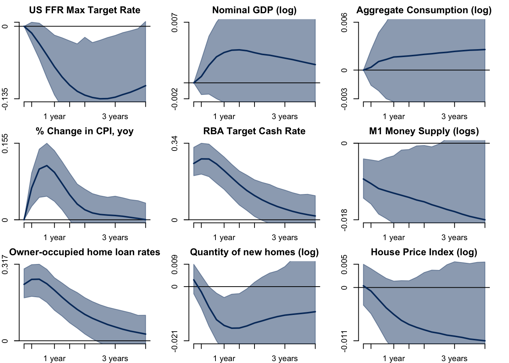
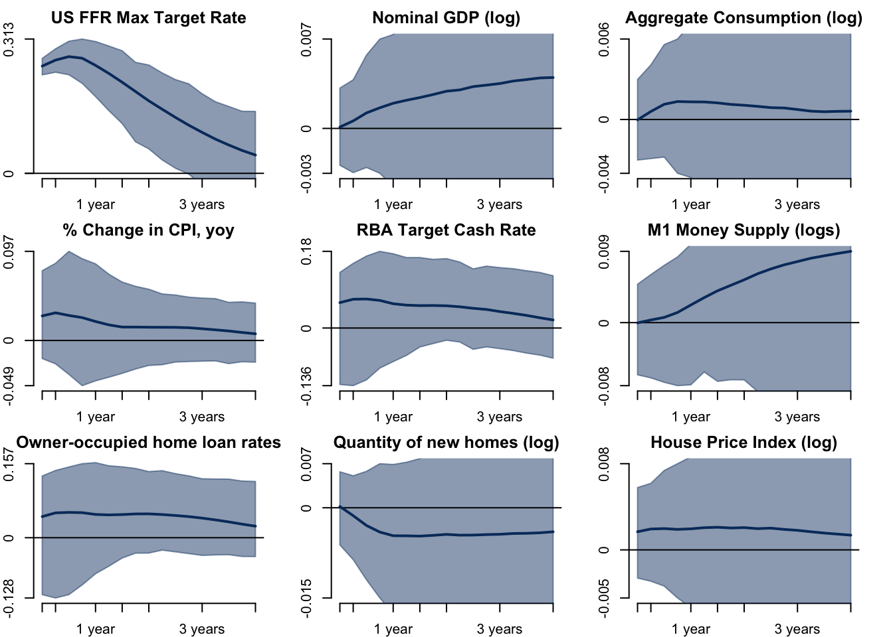
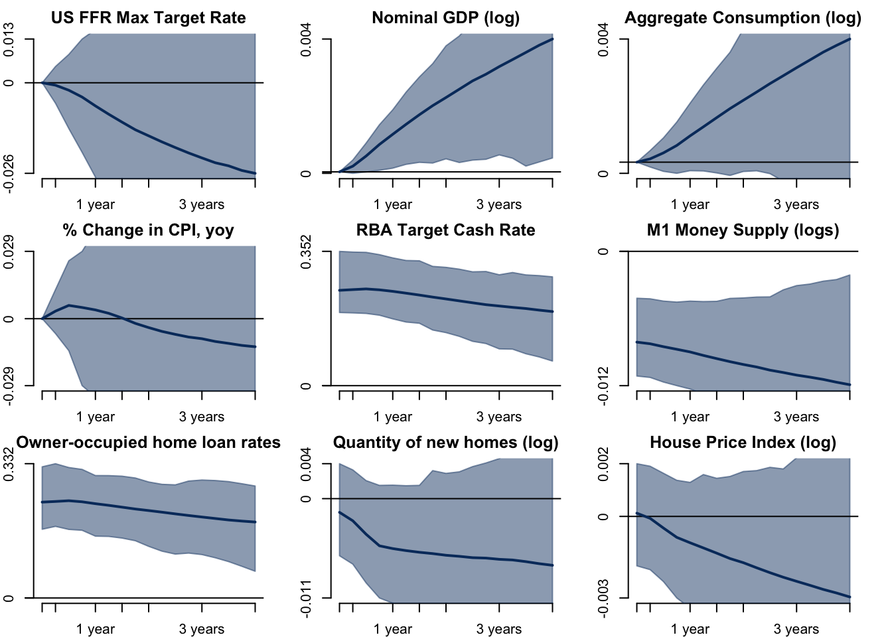
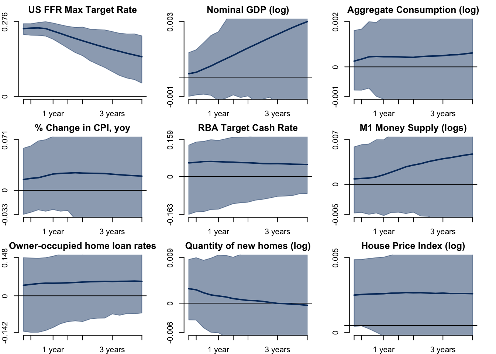

Estimating the impact of monetary policy shocks on different housing indicators: A Bayesian SVAR Approach
Abstract. This project uses a Bayesian SVAR approach to estimate the effects of domestic and foreign monetary policy shocks on housing prices and number of new houses in Australia. The identification relies on imposing exclusion-restrictions and the estimation process follows the D. F. Waggoner and Zha (2003) algorithm using the Gibbs sampler. In the extended version, we estimate the hyperparameters of the priors of the model. We find that a positive domestic monetary policy shock reduces both the number of new houses and housing prices, while a positive foreign (US) monetary policy shock reduces the number of new houses but increases housing prices.
Keywords. bsvars, impulse responses, quarto, R, housing price index, monetary policy shocks
Introduction
Monetary policy is one of the key instruments used by central banks to influence the overall economic activity. In recent years, the housing market has become an increasingly important channel through which monetary policy affects the broader economy (Aliber and Kindleberger (2017)), particularly in Australia where around 57% of household wealth is tied up in the housing market (Sweeney (2023)). That number is thrice as big as the size of the super market in Australia and as such, understanding the relationship between monetary policy shocks and the housing market is crucial for policy-makers, investors, and households alike.
In this study, we aim to estimate the impact of monetary policy shocks on various housing indicators using a Structural Vector Autoregressive (SVAR) modelling approach. SVAR models are a popular econometric tool for investigating the dynamic interactions between macroeconomic variables. By applying this approach, we seek to shed light on how changes in monetary policy impact different dimensions of the housing market.
Research Question
The objective of this paper is to estimate and quantify the impact of monetary policy shocks on different indicators of the housing market such as housing prices, housing transactions/sales, and home loan rates within an economy. Understanding these effects is crucial in understanding how money affects a key factor of the real side of the economy. I formulate this question within a SVAR framework and make use of D. F. Waggoner and Zha (2003) algorithm to sample for posterior draws of the coefficient matrices. I further extend the model using common parameterisation of hierarchical priors and estimate the model for better accuracy.
Data and their Properties
Empirical Project Setup
This project website is being developed as a Quarto document and the empirical work in conducted using R. The necessary datasets are imported from the Reserve Bank of Australia (RBA) and the Australian Bureau of Statistics (ABS) websites using readrba and readabs respectively.
Choice of variables
I use the following variables to answer this question. I discuss the relevance of each variable.
\(\log(M1)\): represents the log of the money supply M1. Both conventional and unconventional monetary policy shocks can change the stock of money supply and its size affects real variables of the economy.
\(\Delta CPI\): represents the year-on-year change in the Consumer Price Index (CPI). It is a measure of inflation in an economy and is affected by monetary policy shocks.
\(\log(c)\): represents the log of consumption of the economy. Monetary policy shocks can alter people’s consumption-savings behaviour.
\(\log(GDP)\): represents the log of the Gross Domestic Product (GDP). Including this along with the consumption helps differentiate the effect on the non-consumption aspect of the economy.
\(loanrate\): represents the weighted average interest rates on owner-occupied home loans. This serves as a proxy for borrowing costs for households who save in the form of housing wealth.
\(AUCR\): represents the Australian Cash Rate Target. This is the major monetary policy instrument available to the RBA.
\(USFFR\): represents the Federal Funds Rate Maximum Target Rate. Monetary policy adopted in the US tend to ripple into other economies so this is a variable of interest. Another extension to this variable would be to include the Target rates of Australia’s largest trading partners.
\(nhouses\): represents the number of new private dwellings (houses) approved for construction in Australia. Impact on housing prices might be dampened by the supply elasticity of housing captured by this variable. Moreover, macroeconomic conditions may determine the level of new construction projects undertaken domestically.
\(PPI\): represents the Property Price Index in Australia. The index is normalized with respect to the property prices in 2011-2012 (=100). Tracking the effect of monetary policy on housing prices is a key object of interest.
Below is a preview of the dataset used in this project.
Data Properties
The dataset consists quarterly data from 2003 Q3 to 2021 Q4. The variables discussed above are illustrated in the figure below. Note that the logged variables trend upwards because they are expressed in their levels, while variables expressed in percentage change terms do not exhibit this behaviour.

ADF Tests
Next, I perform and display ADF test results on the variables. I report, for each variable, the difference level at which the ADF tests rejects the null that the series is non-stationary.
ADF Test
perform_adf_tests <- function(df) {
# Create an empty dataframe to store the results
results <- data.frame(Variable = character(), TestType = character(),
TestStatistic = numeric(), PValue = numeric(),
stringsAsFactors = FALSE)
# Iterate over each column in the dataframe
for (col in colnames(df)) {
# Remove NA values from the column
column_data <- na.omit(df[[col]])
# Perform ADF test for levels
adf_levels <- tseries::adf.test(na.omit(column_data), k = 4)
# Check if p-value is less than or equal to 0.05
if (adf_levels$p.value <= 0.05) {
results <- bind_rows(results,
data.frame(Variable = col, TestType = "Levels",
TestStatistic = adf_levels$statistic,
PValue = adf_levels$p.value)
)
} else {
# Perform ADF test for first difference
adf_diff1 <- tseries::adf.test(na.omit(diff(column_data)), k = 4)
# Check if p-value is less than 0.05
if (adf_diff1$p.value < 0.05) {
results <- bind_rows(results,
data.frame(Variable = col, TestType = "First Difference",
TestStatistic = adf_diff1$statistic,
PValue = adf_diff1$p.value)
)
} else {
# Perform ADF test for second difference
adf_diff2 <- tseries::adf.test(na.omit(diff(column_data, differences = 2)), k = 4)
results <- bind_rows(results,
data.frame(Variable = col, TestType = "Second Difference",
TestStatistic = adf_diff2$statistic,
PValue = adf_diff2$p.value)
)
}
}
}
# Return the results dataframe
return(results)
}
adf_test_results <- perform_adf_tests(df)
rmarkdown::paged_table(adf_test_results)ACF Plots

PACF Plots

Model and Hypothesis
I employ a structural VAR model to assess the impact of monetary policy shocks on different housing indicators. The SVAR model with \(p\) lags can be written as \[ \begin{align} &B_0Y_t = B_0 + B_1 Y_{t-1} + \dots + B_p Y_{t-p} + U_t\\ &U_{t}| Y_{t-1} \dots Y_{t-p} \sim _{iid} ( 0_N, I_N) \end{align} \] where \[ Y_t = \begin{pmatrix} USFFR_t\\ \log(GDP_t)\\ \log(c_t)\\ \Delta CPI_t\\ AUCR_t\\ \log(q_{\text{new homes}_t})\\ \log(HPI_t)\\ i_{\text{home loan}_t}\\ \log(M1_t) \end{pmatrix} \]
\(B_0\) is a structural matrix that captures the contemporaneous relationship between the variables in \(Y_t\). \(U_t\) represents conditionally independent structural shocks.
In many cases, the structural model can be estimated utilizing the information from its corresponding RF model \[ \begin{align} &Y_t = A_0 + A_1 Y_{t-1} + \dots + A_p Y_{t-p} + E_t\\ &E_{t}| Y_{t-1} \dots Y_{t-p} \sim _{iid} ( 0_N, \Sigma) \end{align} \] where \(A_i = B_0^{-1}B_i\) and \(B_0^{-1}I_N (B_0^{-1})'\).
The identification in the SVAR model can be achieved either by using some exclusion restrictions, sign restrictions, instrumental variables, or prior distribution. The next section will talk about the exact composition of the structural matrix and the conditions for identification.
Identification
I plan to use exclusion-restrictions to identify the structural matrix \(B_0\). In particular, I will impose a lower-triangular restriction on \(B_0\) and employ the solution concept in D. Waggoner and Zha (2003) who use a normalization rule as an optimal solution to the local identification problem. I will then employ the Gibbs sampler for a SVAR model with exclusion restrictions as in D. F. Waggoner and Zha (2003) to obtain draws for \(B_0\) and \(B_+\).
\[ B_0 Y = B_+ X + U, \qquad \qquad U|X \sim \mathcal{MN}_{N \times T}(\textbf{0}_{N \times T}, I_T, I_N) \] where
\(B_0\) is a \(N \times N\) contemporaneous effects matrix.
\(Y = [y_1, \dots, y_T]\) is a \(N \times T\) matrix of observations.
\(B_+ = [B_d, B_1, \dots, B_p]\) is a \(N \times K\) matrix of autoregressive parameters, where \(K = Np + d\) (\(d\) is the number of deterministic terms; \(p\) is the number of lags).
\(X = [x_1, \dots, x_T]\) is a \(K \times T\) matrix of lagged observations where each \(x_t = (1, y_{t-1}, \dots, y_{t-p})'\).
\(U = [u_1, \dots, u_T]\) is a \(N \times T\) matrix of structural shocks.
For convenience of coding and inference purposes, we consider a row-wise equation form as follows: \[ B_{0[n.\cdot]} Y = B_{+n} X + U_n, \qquad \qquad U_n|X \sim \mathcal{N}(\mathbf{0}_T, I_T) \]
If \(r_n\) denotes the number of elements in the \(n^{th}\) row of \(B_0\) that stay unrestricted, then we can further decompose \(B_{0[n.\cdot]}\) into \(b_n\) and \(V_n\).
\(b_n\) is a \(1 \times r_n\) vector of unrestricted elements in the \(n^{th}\) row of \(B_0\).
\(V_n\) is a \(r_n \times N\) matrix which places elements of \(b_n\) in the appropriate positions to impose the restrictions on \(B_0\).
Then, the row-wise equation form can be written as follows: \[ b_n V_n Y = B_{+n} X + U_n, \qquad \qquad U_n|X \sim \mathcal{N}(\mathbf{0}_T, I_T) \] Following D. F. Waggoner and Zha (2003) and Arias, Rubio‐Ramírez, and Waggoner (2018), we define that \((B_+, B_0)\) follow jointly a Normal-Generalised Normal (NGN) distribution denoted as \[ p(B_+, B_0) \sim \mathcal{NGN}(B, \Omega, S, \nu)\]
if \(B_{+n}\) follows a K-variate normal distribution given \(b_n\) \[ p(B_{+n}|b_n) = \mathcal{N}_k(b_nV_nB, \Omega) \] with kernel \[ p(B_{+n}|b_n) \propto \exp \left\{ -\frac{1}{2} \left( B_{+n} - b_nV_nB \right) \Omega^{-1} \left( B_{+n} - b_nV_nB \right)' \right\} \]
for \(n = 1, \dots, N\) and \(b_1, \dots, b_N\) jointly have a distribution whose kernel is specified by \[ p(b_1, \dots, b_N) \propto | \det(B_0) |^{\nu - N} \exp \left\{ -\frac{1}{2} \sum_{n=1}^N b_n V_n S^{-1} V_n' b_n' \right\} \]
The joint-distribution of \((B_+, B_0)\) can then be written as \[ p(B_0, B_+) = \left( \prod_{n=1}^N p(B_{+n}|b_n)\right) p(b_1, \dots, b_N) \]
This classification of the joint-distribution allows us to obtain natural-conjugate prior and corresponding posterior distributions.
Moreover, the following ltexclusion function imposes a lower-triangular restriction on \(B_0\) and creates a list containing a matrix of \(b_n\) and corresponding \(V_n\) row vectors.
Imposing lower-triangular exclusion restrictions
ltexclusion = function(usedata){
BM.V = vector("list",usedata$N)
for (n in 1:usedata$N){
BM.V[[n]] = cbind(diag(n),matrix(0,n,usedata$N-n))
}
B0.initial = matrix(0,usedata$N,usedata$N)
for (n in 1:usedata$N){
unrestricted = apply(BM.V[[n]],2,sum)==1
B0.initial[n,unrestricted] = rnorm(sum(unrestricted))
}
B0Vlist = list(B0.initial = B0.initial, V = BM.V)
}Baseline Model
Prior distribution
Given this parameterisation, we can write down the kernel of the prior given hyperparameters \((\underline B, \underline \Omega, \underline S, \underline \nu)\) as follows: \[ | \det(B_0) |^{\underline \nu - N} \exp \left\{ -\frac{1}{2} \sum_{n=1}^N b_n V_n \underline S^{-1} V_n' b_n' \right\} \exp \left\{ -\frac{1}{2} \sum_{n=1}^N \left( B_{+n} - b_nV_n \underline B \right) \underline \Omega^{-1} \left( B_{+n} - b_nV_n \underline B \right)' \right\} \]
This prior distribution has two key advantages. Firstly, it leads to a full-conditional posterior distributions that allow efficient sampling. This allows us to estimate the structural parameters of the SVAR model.
Secondly, it belongs to a class of reference prior distributions that are invariant to the pre-multiplication of the parameter matrices by a rotation matrix up to which the system is identified (see Rubio-Ramirez, Waggoner, and Zha (2010)). This allows us to conduct a proper Bayesian treatment of this model given the identification above.
Calibration of the prior
- \(\underline \nu = N\) is a commonly chosen value as it implies that the generalised-normal part is equivalent to a \(r_n\)-variate normal with the mean equal to a vector of zeros and the covariance matrix equal to \(\underline S\).
- \(\underline S = \kappa_3 I_N\) implies that the covariances across the rows of \(B_0\) is zero, and the variance of each row is homoskedastic (constant). \(\kappa_3\) can be interpreted as a contemporaneous effects shrinkage and is set to 10.
- \(\underline B = [0_{N \times 1} \; \kappa_4 I_N \; 0_{N \times (p-1)N}]\) implies an AR1 process for the structural VAR at the prior mean. In this calibration, \(\kappa_4 = 1\), the AR1 process is a random walk process.
- \(\underline \Omega = \begin{pmatrix} \kappa_2 & 0\\ 0 & \kappa_1 I_{Np} \end{pmatrix}\) is the prior covariance matrix. It is taken to be a diagonal matrix with the diagonal elements set as the Litterman prior. \(\kappa_2\) represents the constant term shrinkage and is set to 10. \(\kappa_1\) represents the autoregressive slope shrinkage and is set to 0.1.
We also calibrate the number of draws \(S = 5000\) for any sampling, while the \(S.burnin = 100\) represents the number of draws that are sampled first and then discarded.
The following R code creates a list of model parameters with the calibration as above.
List of Parameters
# set the priors' parameters
parameters = list(
kappa1 = .1, # autoregressive slope shrinkage
kappa2 = 10, # constant term shrinkage
kappa3 = 10, # contemporaneous effects shrinkage
kappa4 = 1, # VAR prior persistence
S = 5000, # number of sample draws
S.burnin = 100, # number of initial draws that are burned-in
h = 16 # forecast horizon
)The following R function takes as argument data and model parameters to compute parameters of the prior distribution and store it as a list.
Prior Function
# A function that computes and stores
# all the prior distribution components given a parameter list input
prior = function(parameters, usedata){
priors = list(
B = cbind(rep(0,usedata$N), parameters$kappa4*diag(usedata$N), matrix(0, usedata$N, (usedata$p-1)*usedata$N)), # random walk prior
Omega = diag(c(parameters$kappa2,parameters$kappa1*((1:usedata$p)^(-2))%x%rep(1,usedata$N))),
# Omega = diag(c(parameters$kappa2,parameters$kappa1*rep(1,usedata$N*usedata$p))),
S = parameters$kappa3*diag(usedata$N),
nu = usedata$N
)
}Likelihood Function
The conditional normality of the error term allows us to write the kernel of the likelihood function and show that it can be expressed as a NGN distribution. \[ \begin{align*} &L(B_+, B_0|Y,X) \propto | \det(B_0^{-1}B_0^{-1'})|^{-\frac{T}{2}} \exp \left\{ -\frac{1}{2} \sum_{n=1}^N \left(b_n V_n Y - B_{+n} X \right) \left( b_n V_n Y - B_{+n} X \right)' \right\}\\ & = | \det(B_0)|^{T} \exp \left\{ -\frac{1}{2} \sum_{n=1}^N \left( b_n V_n Y Y' V_n' b_n' - 2 b_n V_n Y X' B_{+n}' + B_{+n} X X' B_{+n}' \right) \right\}\\ & = | \det(B_0)|^{T} \exp \left\{ -\frac{1}{2} \sum_{n=1}^N \left( b_n V_n Y Y' V_n' b_n' + B_{+n} X X' B_{+n}' - 2 b_n V_n Y X' (XX')^{-1} (XX') B_{+n}' \right. \right. \\ & \left. \left. + b_n V_n Y X' (XX')^{-1} (XX') (XX')^{-1} XY'V_n'b_n' - b_n V_n Y X' (XX')^{-1} (XX') (XX')^{-1} XY'V_n'b_n' \right) \right\}\\ & = | \det(B_0)|^{T} \exp \left\{ -\frac{1}{2} \sum_{n=1}^N \left( b_n V_n [ YY' - YX'(XX')^{-1}XY'] V_n' b_n' + B_{+n} X X' B_{+n}' \right. \right. \\ & \left. \left. - 2 b_n V_n Y X' (XX')^{-1} (XX') B_{+n}' + b_n V_n Y X' (XX')^{-1} XY' V_n' b_n' \right) \right\}\\ & \text{}\\ & \text{Let $\hat A = YX' (XX')^{-1} $, then we can simplify}\\ & \text{}\\ & = | \det(B_0)|^{T} \exp \left\{ -\frac{1}{2} \sum_{n=1}^N \left( b_n V_n [ YY' - \hat A XY'] V_n' b_n' + B_{+n} X X' B_{+n}' - 2 b_n V_n \hat A (XX') B_{+n}' \right. \right.\\ & \left. \left. + b_n V_n \hat A XY' V_n' b_n' \right) \right\}\\ & = | \det(B_0)|^{T} \exp \left\{ -\frac{1}{2} \sum_{n=1}^N \left( b_n V_n [ YY' - \hat A XY'] V_n' b_n' + (B_{+n} - b_n V_n \hat A) X X' (B_{+n} - b_n V_n \hat A)' \right) \right\}\\ & = | \det(B_0)|^{T} \exp \left\{ -\frac{1}{2} \sum_{n=1}^N b_n V_n [ YY' - \hat A XY'] V_n' b_n' \right\} \exp \left\{ -\frac{1}{2} \sum_{n=1}^N (B_{+n} - b_n V_n \hat A) X X' (B_{+n} - b_n V_n \hat A)' \right\} \end{align*} \]
Comparing this with the general NGN kernel, we can write that
\[ L(B_+, B_0|Y, X) = \mathcal{NGN}(\tilde B, \tilde \Omega, \tilde S, \tilde \nu) \] where
\[ \tilde B = \hat A, \quad \tilde \Omega = (XX')^{-1}, \quad \tilde S = ( YY' - \hat A XY')^{-1}, \quad \tilde \nu = T + N. \] Hence, we have shown that the likelihood function follows a NGN distribution.
Posterior Distribution
The prior and the likelihood can be used to obtain the posterior as follows:
\[ \begin{align*} & p(B_+, B_0|Y, X) \propto L(B_+, B_0|Y, X) p(B_0, B_+)\\ & = | \det(B_0)|^{T} \exp \left\{ -\frac{1}{2} \sum_{n=1}^N \left(b_n V_n Y - B_{+n} X \right) \left( b_n V_n Y - B_{+n} X \right)' \right\}\\ & \times | \det(B_0) |^{\underline \nu - N} \exp \left\{ -\frac{1}{2} \sum_{n=1}^N b_n V_n \underline S^{-1} V_n' b_n' \right\} \exp \left\{ -\frac{1}{2} \sum_{n=1}^N \left( B_{+n} - b_nV_n \underline B \right) \underline \Omega^{-1} \left( B_{+n} - b_nV_n \underline B \right)' \right\} \\ & = | \det(B_0) |^{T + \underline \nu - N} \exp \left\{ -\frac{1}{2} \sum_{n=1}^N \left(b_n V_n Y Y' V_n' b_n' - 2 b_n V_n Y X' B_{+n}' + B_{+n} X X' B_{+n}' \right) \right.\\ & \left. + b_n V_n \underline S^{-1} V_n' b_n' + B_{+n} \underline \Omega^{-1} B_{+n}' - 2 b_n V_n \underline B \underline \Omega^{-1} B_{+n}' + b_n V_n \underline B \underline \Omega^{-1} \underline B' V_n' b_n' \right\}\\ & = | \det(B_0) |^{T + \underline \nu - N} \exp \left\{ -\frac{1}{2} \sum_{n=1}^N b_n V_n [ YY' + \underline S^{-1} + \underline B \underline \Omega^{-1} \underline B'] V_n' b_n' - 2 b_n V_n [ YX' + \underline B \underline \Omega^{-1} ] B_{+n}' \right.\\ & \left. + B_{+n} [ XX' + \underline \Omega^{-1} ] B_{+n}' \right\}\\ & \text{}\\ & \text{ Let $ \bar \Omega = (XX' + \underline \Omega^{-1})^{-1} $, then we can write}\\ & \text{}\\ & = | \det(B_0) |^{T + \underline \nu - N} \exp \left\{ -\frac{1}{2} \sum_{n=1}^N b_n V_n [ YY' + \underline S^{-1} + \underline B \underline \Omega^{-1} \underline B'] V_n' b_n' - 2 b_n V_n [ YX' + \underline B \underline \Omega^{-1} ] \bar \Omega \bar \Omega^{-1} B_{+n}' \right.\\ & \left. + B_{+n} \bar \Omega^{-1} B_{+n}' \right\}\\ & \text{}\\ & \text{ Let $ \bar B = (YX' + \underline B \underline \Omega^{-1}) \bar \Omega $, then we can write}\\ & \text{}\\ & = | \det(B_0) |^{T + \underline \nu - N} \exp \left\{ -\frac{1}{2} \sum_{n=1}^N b_n V_n [ YY' + \underline S^{-1} + \underline B \underline \Omega^{-1} \underline B' - \bar B \bar \Omega^{-1} \bar B' ] V_n' b_n' \right.\\ & \left. + b_n V_n \bar B \bar \Omega^{-1} \bar B' V_n' b_n' - 2 b_n V_n \bar B \bar \Omega^{-1} B_{+n}' + B_{+n} \bar \Omega^{-1} B_{+n}' \right\}\\ & \text{}\\ & \text{ Define $ \bar S = (YY' + \underline S^{-1} + \underline B \underline \Omega^{-1} \underline B' - \bar B \bar \Omega^{-1} \bar B')^{-1} $, then we can write}\\ & \text{}\\ & = | \det(B_0) |^{T + \underline \nu - N} \exp \left\{ -\frac{1}{2} \sum_{n=1}^N b_n V_n \bar S^{-1} V_n' b_n' + (B_{+n} - b_n V_n \bar B) \bar \Omega^{-1} (B_{+n} - b_n V_n \bar B)' \right\}\\ & = | \det(B_0) |^{T + \underline \nu - N} \exp \left\{ -\frac{1}{2} \sum_{n=1}^N b_n V_n \bar S^{-1} V_n' b_n' \right\} \exp \left\{ -\frac{1}{2} \sum_{n=1}^N (B_{+n} - b_n V_n \bar B) \bar \Omega^{-1} (B_{+n} - b_n V_n \bar B)' \right\} \end{align*} \] Thus, \[ p(B_+, B_0|Y,X) \sim \mathcal{NGN}(\bar B, \bar \Omega, \bar S, \bar \nu) \] where the first three parameters are defined above and \(\bar \nu = T + \underline \nu\).
The following R function uses the prior and information contained in data to compute and store (as a list) the set of posterior parameters for our model.
Posterior Function
posterior = function(priors, usedata){
Omega.inv = solve(priors$Omega)
Omega.post.inv = usedata$X%*%t(usedata$X) + Omega.inv
Omega.post = solve( Omega.post.inv )
B.post = (usedata$Y%*%t(usedata$X) + priors$B%*%Omega.inv) %*% Omega.post
S.inv.post = usedata$Y%*%t(usedata$Y) + solve(priors$S) + priors$B%*%Omega.inv%*%t(priors$B) - B.post%*%Omega.post.inv%*%t(B.post)
nu.post = ncol(usedata$Y) + priors$nu
posteriors = list(
B = B.post,
Omega = Omega.post,
S.inv = S.inv.post,
nu = nu.post
)
}(Gibbs) Sampling
The sampling algorithm follows the derivation by D. F. Waggoner and Zha (2003). The algorithm first samples \(b_1, \dots, b_n\) independent of \(B_+\) in a serial, iterative fashion. Then, the sampled \(b_1, \dots, b_n\) are normalised. Using the normalised \(b_1, \dots, b_n\) and data, \(B_{+n}\) can be drawn independently.
Sample \(b_1, \dots, b_n\) iteratively
Recall that the marginal posterior distribution of \(b_1, \dots, b_n\) is proportional to \[ | \det(B_0) |^{\underline \nu - N} \exp \left\{ -\frac{1}{2} \sum_{n=1}^N b_n V_n \underline S^{-1} V_n' b_n' \right\} \] The Gibbs sampler draws from the full conditional posterior distribution of vector \(b_n\) given data as well as parameters from other rows of contemporaneous effects matrix, that is, \(b_1, \dots, b_{n-1}, b_{n+1}, \dots, b_{N}\). The full conditional posterior is denoted as \[ p(b_n|Y, X, b_1, \dots, b_{n-1}, b_{n+1}, \dots, b_{N}) \] To sample from the full conditional posterior \(p(b_n^{(s)}|Y, X, b_1^{(s)}, \dots, b_{n-1}^{(s)}, b_{n+1}^{(s-1)}, \dots, b_{N}^{(s-1)})\) at each iteration \(s\) and at each row \(n\), the following steps are undertaken:
Step 1: define and compute the following values
\(U_n = chol \left( \bar \nu (V_n \bar S^{-1}V_n')^{-1} \right)\) – an \(r_n \times r_n\) upper-triangular matrix;
\(w = B_{0[-n.\cdot]\perp}^{(s)}\) – a \(1 \times N\) matrix;
\(w_1 = wV_n'U-n' \cdot \left( w V_n'U_n'U_n V_n w' \right)^{-\frac{1}{2}}\) – a \(1 \times r_n\) vector;
\(W_n = [w_1' \quad w_{1 \perp}']'\) – a \(r_n \times r_n\) matrix.
Step 2: draw the elements of a \(1 \times r_n\) vector \(\alpha_n\) defined as follows: - draw the first element by drawing $u ({+1}, ^{-1}I{+1}) and setting \[ \alpha_{n[\cdot.1]} = \begin{cases} \sqrt{u'u} & \text{ with probability } 0.5\\ -\sqrt{u'u} & \text{ with probability } 0.5 \end{cases} \] - draw the remaining \(r_n-1\) element of \(\alpha_n\) from \(\mathcal{N}(\textbf{0}_{r_n-1}, \bar \nu^{-1} I_{r_n-1})\).
Step3: compute the draw from the full-conditional posterior distribution of \(b_n\) by \[ b_n^{(s)} = \alpha_n W_n U_n \]
Note that \(X\perp\) refers to the orthogonal-complement matrix of \(X\). And, \(B_{0[-n.\cdot]}\) refers to the matrix \(B_{0}\) without its n\(^{th}\) row.
Normalise \(b_1, \dots, b_n\)
D. Waggoner and Zha (2003) provide a normalising rule that preserves the shape of the likelihood function. These normalised draws from the normal-generalised-normal posterior distribution are free of the local identification problem and hence the estimates post-normalisation are meaningful and appropriate for statistical inference.
Step 1: normalise with respect to one mode \(\hat B_0\) of the posterior distribution. Let \(\hat B_0\) be defined as \[ \hat B_0 = chol((\bar\nu-N)*\bar S)' \]
Step 2: define scaling matrices \(D_i\) for \(i=1,\cdot,2^N\).
These \(N \times N\) matrices \(D_i\) are diagonal matrices with diagonal elements equal to -1 or 1. Thus, \(2^N\) set of \(D_i\) matrices cover all possible combinations of -1 and 1 on the diagonal.
Step 3: compute the distance between \(D_i B_0^{(s)}\) and \(\hat B_0\).
\[ d \left( \left[ \left( D_i B_0^{(s)} \right)^{-1'} - \hat B_0^{-1'} \right] | (\hat B_0' \hat B_0)^{-1} \right) = \sum_{n=1}^N \left[ \left( D_i B_0^{(s)} \right)^{-1'} - \hat B_0^{-1'} \right]_{[n. \cdot]} (\hat B_0' \hat B_0)^{-1} \left[ \left( D_i B_0^{(s)} \right)^{-1'} - \hat B_0^{-1'} \right]_{[n. \cdot]}' \]
The choice of \(D_i\) that minimises this distance is used to create the normalised draw \(D_{i*(s)}B_0^{(s)}\) after applying it to all of the \(S\) draws.
Sample \(B_{+n}\) independently
For each draw of \(b_n^{(s)}\), a corresponding draw of \(B_{+n}^{(s)}\) is directly sampled from the normal distribution below: \[ B_{+n}^{(s)} \sim \mathcal{N}(b_n^{(s)}V_n \bar B_n, \bar \Omega) \]
The posteriorSimuations function below takes model parameters, the posterior parameters, the exclusion restriction and the number of variables as given to sample draws using the Gibbs sampler. The functions rgn, normalize.Gibbs.output.parallel and rnorm.ngn are obtained from Tomasz Woźniak’s lecture notes. These functions are provided in the Appendix.
Function to sample B0 and Bplus posteriors
posteriorSimulations = function(parameters, posteriors, B0Vlist, N){
t0 = proc.time()
B0.posterior = rgn(n=parameters$S.burnin, S.inv=posteriors$S.inv, nu=posteriors$nu, V=B0Vlist$V, B0.initial=B0Vlist$B0.initial)
t1 = proc.time()
(t1-t0)/60
# sampling B0 from the posterior distribution using Gibbs
t0 = proc.time()
B0.posterior = rgn(n=parameters$S, S.inv=posteriors$S.inv, nu=posteriors$nu, V=B0Vlist$V, B0.initial=B0.posterior[,,parameters$S.burnin])
t1 = proc.time()
(t1-t0)/60
# normalisation
B0.hat = t(chol((posteriors$nu-N)*posteriors$S)) # normalisation using this B0.hat should work
BM.B0.posterior = normalize.Gibbs.output.parallel(B0.posterior,B0.hat=B0.hat)
t2 = proc.time()
(t2-t1)/60
# sample B+ from the normal conditional posterior
t2 = proc.time()
BM.Bp.posterior = rnorm.ngn(BM.B0.posterior, B=posteriors$B,Omega=posteriors$Omega)
t3 = proc.time()
(t3-t2)/60
list(B0.posterior = BM.B0.posterior, Bp.posterior = BM.Bp.posterior)
}The posteriorMeans function below computes the sample average of the \(B_0\) and \(B_+\) matrices obtained from each sampling step.
posteriorMeans Function
posteriorMeans = function(Bposteriors){
Bposteriors.means = list(
B0 = rowMeans(Bposteriors$B0.posterior, dims = 2),
Bp = rowMeans(Bposteriors$Bp.posterior, dims = 2)
)
}The pmatrix function below prints the matrices in R in LaTeX form.
Function to print matrix in LaTeX format
pmatrix <- function(x) {
if (is.matrix(x)) {
cat(c("$$\\begin{equation*}\n",
"\\left(",
knitr::kable(x, format = "latex",
tabular = "array",
vline = "",
align = "c",
linesep = "",
toprule = NULL,
bottomrule = NULL),
"\\right)\\, .\n",
"\\end{equation*}$$\n"))
} else {
cat(c("$$\\begin{equation*}\n",
x,
"\\end{equation*}$$\n"))
}
}Simulation Run
The purpose of this simulation run is to verify whether my model and corresponding code can replicate the true parameters of a data-generating process. To do this, I create artificial data containing 1000 observations simulated from a bi-variate Gaussian random walk process with the covariance matrix equal to the identity matrix of order 2. Then, I estimate a model with a constant term and 1 lag with the artificial data. And I show that the posterior mean of the autoregressive and the covariance matrices are close to an identity matrix and that the posterior mean of the constant term is close to a vector of zeros.
This process is laid out in steps below:
Step 1: The following code generates artificial data containing 1000 observations from a bi-variate Gaussian random walk process with the covariance matrix equal to the identity matrix of order 2.
set.seed(12345)
sim.p = 1
sim.T = 1000
sim.N = 2
sim.K = 1 + sim.N*sim.p
sim.Y = arima.sim(list(order = c(0,1,0)), n = sim.T + sim.p-1, mean = 0, sd =1)
for (i in 2:sim.N){
sim.Y = rbind(sim.Y, arima.sim(list(order = c(0,1,0)), n = sim.T + sim.p-1, mean = 0, sd = 1))
}
sim.X = matrix(1,1,sim.T)
for (i in 1:sim.p){
sim.X = rbind(sim.X, sim.Y[,(sim.p+1-i):(ncol(sim.Y)-i)])
}
sim.Y = sim.Y[,-sim.p]
artificialdata = list(p = sim.p, N = sim.N, K = sim.K, Y = sim.Y, X = sim.X)Step 2: We obtain a list of simulation priors and posteriors using the prior and posterior functions.
sim.priors = prior(parameters, artificialdata)
sim.posteriors = posterior(sim.priors, artificialdata)Step 3: We create a list of \(V_n\) and \(b_n\) corresponding to a lower triangular exclusion restriction on \(B_0\) using the ltexclusion function.
sim.B0Vlist = ltexclusion(artificialdata)Step 4: We sample the \(B_0\) and \(B_p\) posteriors with the Gibbs sampler using the posteriorSimulations function, and save the results for future use.
sim.Bposteriors = posteriorSimulations(parameters, sim.posteriors, sim.B0Vlist, artificialdata$N)
save(sim.Bposteriors, sim.priors, sim.posteriors, file = "sim-posteriors.RData")Step 5: We compute the sample averages of our posterior \(B_0\) and \(B_+\). We use the pmatrix function to display the results as a matrix.
sim.Bposteriors.means = posteriorMeans(sim.Bposteriors)
sim_B0 = pmatrix(sim.Bposteriors.means$B0)\[\begin{equation*} \left( \begin{array}{cc} 1.007094 & 0.000000\\ -0.037662 & 1.000047\\ \end{array} \right)\, . \end{equation*}\]
We can see that the computed \(B_0\) covariance matrix is numerically identical to an identity matrix.
sim_Bp = pmatrix(sim.Bposteriors.means$Bp)\[\begin{equation*} \left( \begin{array}{ccc} 0.2276255 & 0.9989406 & -0.0071993\\ -0.1389968 & -0.0461782 & 0.9791025\\ \end{array} \right)\, . \end{equation*}\]
The first column of \(B_+\) represents the posterior mean of the constant term. The values are small and close to zero. The rest of the \(B_+\) matrix represents the autoregressive matrix. Its posterior mean is numerically equal to an identity matrix.
Data Results
Step 1: I set the desired number of lags in the model and use the data to create matrices \(X\) and \(Y\). I store my data as a list named mydata.
# Y is N by T; X is K by T
p = 4 # set a number of lags included
N = ncol(df)
K = 1 + N*p
Y = t(df[(p+1):nrow(df),])
X = matrix(1,1,ncol(Y))
for (i in 1:p){
X = rbind(X,t(df[((p+1):nrow(df))-i,]))
}
mydata = list(p=p,N=N,K=K,Y=Y,X=X)Step 2: We obtain a list of data priors and posteriors using the prior and posterior functions.
priors = prior(parameters, mydata)
posteriors = posterior(priors, mydata)Step 3: We create a list of \(V_n\) and \(b_n\) corresponding to a lower triangular exclusion restriction on \(B_0\) using the ltexclusion function.
B0Vlist = ltexclusion(mydata)Step 4: We sample the \(B_0\) and \(B_p\) posteriors with the Gibbs sampler using the posteriorSimulations function, and save the results for future use.
Bposteriors = posteriorSimulations(parameters, posteriors, B0Vlist, mydata$N)
save(Bposteriors, priors, posteriors, file = "data-posteriors.RData")Step 5: We compute the sample averages of our posterior \(B_0\) and \(B_+\). We use the pmatrix function to display the results as a matrix.
Bposterior.means = posteriorMeans(Bposteriors)
data_B0 = pmatrix(Bposterior.means$B0)\[\begin{equation*} \left( \begin{array}{ccccccccc} 2.7194046 & 0.0000000 & 0.0000000 & 0.0000000 & 0.0000000 & 0.0000000 & 0.0000000 & 0.000000 & 0.0000\\ -0.0083644 & 26.4727032 & 0.0000000 & 0.0000000 & 0.0000000 & 0.0000000 & 0.0000000 & 0.000000 & 0.0000\\ 0.0008651 & -3.3422037 & 25.2345905 & 0.0000000 & 0.0000000 & 0.0000000 & 0.0000000 & 0.000000 & 0.0000\\ -0.1828049 & -0.7020495 & 1.3466381 & 1.7545424 & 0.0000000 & 0.0000000 & 0.0000000 & 0.000000 & 0.0000\\ -0.0860228 & 0.8414400 & -0.5550294 & -0.3932550 & 2.7677422 & 0.0000000 & 0.0000000 & 0.000000 & 0.0000\\ -0.0356738 & -0.0524865 & 0.4328343 & -0.0207150 & 0.7724282 & 23.5464079 & 0.0000000 & 0.000000 & 0.0000\\ 0.0564714 & -0.0591610 & -1.1540135 & -0.1889706 & -11.7074445 & 0.5748700 & 12.5986869 & 0.000000 & 0.0000\\ -0.0350259 & 1.0455056 & -0.4176768 & 0.2197704 & -0.7367318 & -0.7794951 & 0.5702032 & 18.973736 & 0.0000\\ -0.1514784 & -0.5314789 & -0.8653124 & -0.2656810 & -0.1211242 & -1.7226130 & 0.0432794 & -1.088046 & 25.4726\\ \end{array} \right)\, . \end{equation*}\]
data_Bp = pmatrix(Bposterior.means$Bp)\[\begin{equation*} \left( \begin{array}{ccccccccccccccccccccccccccccccccccccc} 4.0648312 & 2.8851434 & -0.0720763 & 0.0543550 & -0.1063726 & 0.1452214 & -0.2101715 & -0.3061815 & 0.1386728 & -0.0491164 & -0.0825012 & -0.0205374 & 0.0198261 & 0.0963603 & 0.0343161 & -0.0529068 & -0.0654098 & 0.0386580 & -0.0022661 & -0.1084682 & -0.0085254 & 0.0067943 & -0.0118303 & 0.0085827 & -0.0164046 & -0.0325035 & 0.0195501 & -0.0021792 & -0.1311530 & -0.0044261 & 0.0038886 & -0.0031745 & 0.0019857 & -0.0107474 & -0.0170848 & 0.0107877 & 0.0008287\\ -0.2029448 & 0.0354287 & 26.4521943 & -0.0219235 & 0.1490847 & 0.0251019 & 0.0267879 & 0.0546776 & 0.0632533 & 0.0058823 & 0.0088559 & -0.0042048 & -0.0085999 & -0.1017568 & 0.0058958 & 0.0119987 & 0.0077623 & 0.0098798 & 0.0011410 & -0.0204612 & -0.0007752 & -0.0035664 & -0.0191747 & -0.0096680 & 0.0051670 & -0.0031704 & 0.0043929 & -0.0018771 & -0.0091002 & -0.0005856 & 0.0006959 & -0.0103657 & -0.0142938 & 0.0018546 & -0.0118245 & 0.0000619 & 0.0009664\\ 0.1940443 & 0.0467739 & -3.3574638 & 25.2143267 & 0.0714187 & 0.0251060 & -0.0184962 & -0.0075943 & 0.0571311 & -0.0033328 & 0.0101925 & -0.0018344 & -0.0042200 & -0.1498857 & 0.0103576 & -0.0018948 & 0.0028173 & 0.0031057 & 0.0030597 & -0.0430409 & 0.0032038 & 0.0035788 & 0.0149999 & -0.0016695 & -0.0021676 & 0.0047587 & -0.0035240 & 0.0001813 & -0.0177420 & 0.0012195 & 0.0023508 & 0.0207860 & 0.0052478 & -0.0001616 & 0.0072795 & 0.0007489 & 0.0024354\\ -0.2994919 & -0.1046635 & -0.7076678 & 1.3192450 & 1.2545097 & 0.2219172 & 0.0819993 & 0.2342432 & 0.1860287 & 0.0134389 & -0.0665931 & -0.0068933 & -0.0133227 & -0.1690935 & -0.0475242 & 0.0273171 & -0.0270672 & 0.0256128 & -0.0012948 & 0.0172428 & -0.0052248 & -0.0089509 & -0.1366887 & -0.0386805 & 0.0055421 & -0.0350628 & 0.0032266 & -0.0056818 & -0.0058723 & 0.0006462 & -0.0025096 & -0.0743186 & -0.0082846 & 0.0046185 & -0.0024328 & -0.0073177 & -0.0046012\\ 2.5585255 & -0.0066754 & 0.8288711 & -0.5020729 & -0.4568230 & 3.0138531 & -0.1564680 & -0.1677028 & 0.1617219 & 0.0217405 & 0.0475507 & -0.0020607 & 0.0101789 & -0.0737170 & -0.0415982 & -0.0306631 & -0.1287063 & 0.0263266 & -0.0050378 & 0.0155091 & -0.0015822 & 0.0057429 & -0.0500014 & -0.0438827 & -0.0135053 & -0.0733431 & 0.0057693 & -0.0068353 & -0.0591949 & -0.0020136 & -0.0005626 & 0.0232184 & 0.0027831 & -0.0094360 & -0.0070513 & 0.0012375 & -0.0054753\\ 0.7397746 & 0.0137152 & -0.0229393 & 0.4558805 & -0.0193145 & 0.7315018 & 23.5552900 & -0.0139548 & -0.0115209 & -0.0265769 & 0.0120738 & 0.0050422 & 0.0078787 & -0.0125916 & -0.0357843 & 0.0066207 & -0.0293907 & -0.0039903 & -0.0101668 & 0.0358080 & 0.0064970 & -0.0007591 & 0.0043771 & 0.0026772 & 0.0002161 & 0.0047751 & 0.0003684 & -0.0044988 & 0.0193735 & 0.0015446 & 0.0000531 & -0.0130743 & -0.0050762 & 0.0030893 & -0.0074677 & 0.0011153 & -0.0027520\\ -0.8698116 & -0.0773580 & -0.0332854 & -1.1619398 & -0.2286229 & -11.6541655 & 0.6447739 & 12.6408380 & -0.0523751 & 0.0345840 & 0.0138937 & 0.0141900 & 0.0009504 & -0.0940291 & -0.0251588 & 0.0188155 & -0.0237115 & -0.0096623 & 0.0090631 & 0.0862063 & 0.0056785 & 0.0018945 & 0.0153264 & 0.0233680 & 0.0061449 & 0.0209966 & -0.0069842 & 0.0019724 & 0.0578864 & 0.0006781 & -0.0005237 & -0.0000858 & 0.0155333 & 0.0049881 & 0.0147274 & -0.0012528 & 0.0030459\\ 1.6144229 & -0.0908928 & 1.0580411 & -0.4165733 & -0.3273910 & -0.8469357 & -0.7737012 & 0.3943126 & 18.8998265 & -0.0680833 & 0.0039033 & 0.0073150 & 0.0052320 & 0.0100443 & 0.0334497 & 0.0002363 & 0.0119692 & -0.0546084 & -0.0228015 & 0.0312552 & 0.0059630 & 0.0084129 & 0.0467699 & 0.0723329 & -0.0096091 & 0.0632058 & -0.0246182 & -0.0107407 & 0.0388868 & 0.0037111 & 0.0053680 & 0.0654332 & 0.0740202 & -0.0081970 & 0.0648373 & -0.0110446 & -0.0038691\\ 0.6191889 & -0.1450130 & -0.5229711 & -0.8750196 & -0.2189709 & -0.1517908 & -1.6845184 & -0.0784696 & -0.9996365 & 25.4435492 & 0.0072336 & -0.0021376 & -0.0053391 & -0.0242130 & -0.0060620 & 0.0054626 & -0.0154996 & 0.0136988 & -0.0144934 & 0.0000250 & -0.0001331 & -0.0019112 & 0.0093214 & 0.0214501 & 0.0022844 & 0.0144202 & 0.0005166 & -0.0132830 & 0.0128877 & -0.0033314 & -0.0028081 & 0.0272992 & 0.0229197 & 0.0021625 & 0.0178043 & -0.0034796 & -0.0063407\\ \end{array} \right)\, . \end{equation*}\]
Extended Model
In the extended model, I will estimate the hyperparameters rather than setting them exogenously. Such estimation procedure often improves the fit of the model especially because the results can be sensitive to the parameterisation of the hyperparameters. In particular, I estimate \((\kappa_0, \kappa_+)\) such that \(\underline S = \kappa_0 I_N\) and \(\underline \Omega = \kappa_+ I_K\). I assume
Extension 1: Normal-Gamma Prior Hyperparameter Estimation
Prior Distribution
I postulate the following prior distributions for the hyperparameters: \[ \begin{align*} \kappa_0 | \underline s_{\kappa_0}, \underline \nu_{\kappa_0} \sim \mathcal{IG}2(\underline s_{\kappa_0}, \underline \nu_{\kappa_0}) && \kappa_+ | \underline s_{\kappa_+}, \underline \nu_{\kappa_+} \sim \mathcal{G}(2 \underline s_{\kappa_+}, \frac{1}{2} \underline \nu_{\kappa_+}) \end{align*} \]
The ext.priors function creates a list containing all the elements of the prior.
Extension Model Priors Function
ext.priors = function(parameters,usedata){
ext.prior = list(
kappa0.s = .1,
kappa0.nu = 1,
kappap.s = .1,
kappap.nu = 1,
B = cbind(rep(0,usedata$N), diag(usedata$N), matrix(0, usedata$N, (usedata$p-1)*usedata$N)), # random walk prior
Omega = parameters$kappa2 * diag(usedata$K),
S = parameters$kappa3*diag(usedata$N),
nu = usedata$N
)
}Moreover, we have \[ \begin{align*} p(B_{+n}|b_n, \kappa_+) = \mathcal{N}_k (b_n V_n B, \kappa_+ \Omega) && p(b_n| \kappa_0) = \mathcal{N}_{r_n}(0, \kappa_0 S) \end{align*} \]
Posterior Distribution
Thus, posteriors can be written as \[ \begin{align*} & p(\kappa_0 | Y, X, B_0) \propto p(B_0|\kappa_0) p(\kappa_0 | \underline s_{\kappa_0}, \underline \nu_{\kappa_0} )\\ & \propto \prod_{n=1}^{N}\left(\kappa_0^{-\frac{1}{2}}\right)^{r_n} \exp \left\{ -\frac{1}{2} \sum_{n=1}^N b_n V_n (\kappa_0 I_N)^{-1} V_n' b_n' \right\} \cdot \kappa_0^{-\frac{\underline \nu_{\kappa_0}+2}{2}} \exp \left\{ -\frac{\underline s_{\kappa_0}}{2 \kappa_0} \right\}\\ & \propto \kappa_0^{ -\frac{\underline \nu_{\kappa_0} + 2 + \sum_{n=1}^{N}r_n}{2}} \cdot \exp \left\{ -\frac{1}{2 \kappa_0} \sum_{n=1}^N b_n V_n V_n' b_n' + \underline s_{\kappa_0} \right\}\\ \end{align*} \] This gives \[\bar s_{\kappa_0} = \sum_{n=1}^N b_n V_n V_n' b_n' + \underline s_{\kappa_0}.\] \[\bar \nu_{\kappa_0} = \underline \nu_{\kappa_0} +\sum_{n=1}^{N}r_n\] Also, \[ \begin{align*} & p(\kappa_+ | Y, X, B_+, B_0) \propto p(B_+|\kappa_+, B_0) p(\kappa_+ | \underline s_{\kappa_+}, \underline \nu_{\kappa_+} )\\ & \propto \kappa_+^{-\frac{KN}{2}} \exp \left\{ -\frac{1}{2} \sum_{n=1}^N (B_{+n} - b_n V_n \underline B) (\kappa_+ I_{K})^{-1} (B_{+n} - b_n V_n \underline B)' \right\} \cdot \kappa_+^{\frac{\underline \nu_{\kappa_+} - 2}{2}} \exp \left\{ -\frac{ \kappa_+}{2 \underline s_{\kappa_+}} \right\}\\ & = \kappa_+^{-\frac{-\underline \nu_{\kappa_+} + KN}{2} - 1} \cdot \exp \left\{ -\frac{1}{2} \left( (B_{+n} - b_n V_n \underline B) (B_{+n} - b_n V_n \underline B)' \cdot \frac{1}{\kappa_+} + \frac{1}{\underline s_{\kappa_+}} \kappa_+ \right) \right\}\\ \end{align*} \] This gives \[\bar\lambda = -\frac{-\underline \nu_{\kappa_+} + KN}{2}\] \[\bar \chi = \sum_{n=1}^N (B_{+n} - b_n V_n \underline B) (B_{+n} - b_n V_n \underline B)'\] \[\bar \Psi = \frac{1}{\underline s_{\kappa_+}}\]
The init.struct function creates and initialise a list that contains matrices to store draws of \(\{\kappa_0^{(s)}, \kappa_+^{(s)}, B_0^{(s)}, B_+^{(s)}\}_{s =1}^{S}\).
init.struct = function(usedata,S){
kappa0 = array(NA,c(1,S))
kappa0[1] = 10
kappap = rep(NA, S)
kappap[1] = 10
B0.posterior = array(NA, c(usedata$N,usedata$N,S))
Bp.posterior = array(NA, c(usedata$N,usedata$K,S))
list(kappa0 = kappa0, kappap = kappap, B0.posterior = B0.posterior, Bp.posterior = Bp.posterior)
}(Gibbs) Sampling
Given the full conditional posteriors of both \((\kappa_0,\kappa_+)\) and \((B_0, B_+)\), we can implement the Gibbs sampler as follows:
Step 1: Initialise \((\kappa_0^{(0)},\kappa_+^{(0)})\).
Step 2: Use \((\kappa_0^{(s-1)},\kappa_+^{(s-1)})\) values to compute posterior parameters for each draw \((\bar B, \bar \Omega, \bar s, \bar \nu)^{(s)}\).
Step 3: draw \((B_0, B_+)^{(s)} \sim \mathcal{NGN}(\bar B, \bar \Omega, \bar s, \bar \nu)^{(s)}\) using the sampling procedure presented in the baseline model.
Step 4: draw \(\kappa_0^{(s)} \sim p(\kappa_0 | Y, X, B_0^{(s)}) = \mathcal{IG2}(\bar s_{\kappa_0}, \bar \nu_{\kappa_0})\) and \(\kappa_+^{(s)} \sim p(\kappa_+ | Y, X, B_0^{(s)}, B_+^{(s)}) = \mathcal{GIG}(\bar \lambda, \bar \chi, \bar \Psi)\).
Repeat steps 2-4 to get desired sample size and burn in some initial sample observations as needed.
The sampling function ext.sampling is given below.
ext.sampling = function(parameters, struct, priors, usedata){
set.seed(12345)
B0Vlist.initial = ltexclusion(usedata)
B0.initial = B0Vlist.initial$B0
for (i in 1:(parameters$S + parameters$S.burnin)){
# Computing posterior parameters for each draw
Omega.inv = solve(struct$kappap[i] * priors$Omega)
Omega.post.inv = usedata$X%*%t(usedata$X) + Omega.inv
Omega.post = solve(Omega.post.inv)
B.post = (usedata$Y%*%t(usedata$X) + priors$B%*%Omega.inv) %*% Omega.post
S.post = usedata$Y%*%t(usedata$Y) + solve(struct$kappa0[i] * priors$S) + priors$B%*%Omega.inv%*%t(priors$B) - B.post%*%Omega.post.inv%*%t(B.post)
nu.post = ncol(usedata$Y) + priors$nu
if (i > 1){
B0.initial = struct$B0.post[,,i-1]
}
B0.i = rgn(n=1, S.inv = S.post, nu = nu.post, V = B0Vlist.initial$V, B0.initial = B0.initial)
# B0.hat = t(chol((nu.post - usedata$N)*solve(S.post)))
# B0.norm.i = normalize.Gibbs.output.parallel(B0.i, B0.hat)
Bp.i = rnorm.ngn(B0.i, B.post, Omega.post)
struct$B0.posterior[,,i] = B0.i
struct$Bp.posterior[,,i] = Bp.i
# Now, update kappa
kappa0.nu.post = priors$kappa0.nu + (usedata$N/2)
kappap.lambda.post = -(-priors$kappap.nu + usedata$K * usedata$N)/2
kappap.psi.post = 1/priors$kappap.s
kappa0.s.post = priors$kappa0.s
for (n in 1:usedata$N){
kappa0.s.post = kappa0.s.post + sum(B0.i[n,,1]^2)
kappap.chi.post = (Bp.i[n,,1] - B0.i[n,,1] %*% B.post) %*% t(Bp.i[n,,1] - B0.i[n,,1] %*% B.post)
}
if (i != (parameters$S + parameters$S.burnin)){
struct$kappa0[i+1] = kappa0.s.post / rchisq(n=1,df = kappa0.nu.post)
struct$kappap[i+1] = GIGrvg::rgig(n=1, kappap.lambda.post, kappap.chi.post, kappap.psi.post)
}
}
struct$kappa0 = struct$kappa0[(parameters$S.burnin+1):(parameters$S.burnin + parameters$S)]
struct$kappap = struct$kappap[(parameters$S.burnin+1):(parameters$S.burnin + parameters$S)]
struct$B0.posterior = struct$B0.posterior[,,(parameters$S.burnin+1):(parameters$S.burnin + parameters$S)]
struct$Bp.posterior = struct$Bp.posterior[,,(parameters$S.burnin+1):(parameters$S.burnin + parameters$S)]
# Set normalising matrix
B0.last_draw = struct$B0.posterior[,,parameters$S]
B0_hat = diag(sign(diag(B0.last_draw))) %*% B0.last_draw
# Compute normalised B0
B0.norm = normalize.Gibbs.output.parallel(struct$B0.posterior, B0_hat)
# Compute and save normalised BP
for (i in 1:parameters$S){
struct$Bp.posterior[,,i] = B0.norm[,,i] %*% solve(struct$B0.posterior[,,i]) %*% struct$Bp.posterior[,,i]
}
# Save normalised B0
struct$B0.posterior = B0.norm
return(struct)
}structPosteriorMeans = function(struct){
struct.means = list(
kappa0 = mean(struct$kappa0),
kappap = mean(struct$kappap),
B0 = rowMeans(struct$B0.posterior, dims = 2),
Bp = rowMeans(struct$Bp.posterior, dims = 2)
)
}Simulation Run
Step 1: The following code computes the prior, initialises matrices to store results, and samples the draws for the simulated data.
ext.sim.prior = ext.priors(parameters, artificialdata)
ext.sim.struct = init.struct(artificialdata, parameters$S + parameters$S.burnin)
ext.sim.struct <- ext.sampling(parameters, ext.sim.struct, ext.sim.prior, artificialdata)Step 2: The following code computes and stores the posterior means of \(\{\kappa_0^{(s)}, \kappa_+^{(s)}, B_0^{(s)}, B_+^{(s)}\}_{s =1}^{S}\).
ext.sim.struct.means = structPosteriorMeans(ext.sim.struct)Step 3: The code snippets below display the sample posterior means of the estimated objects using simulated data.
The following code computes the posterior mean of \(B_0\).
ext.sim.data_B0 = pmatrix(ext.sim.struct.means$B0)\[\begin{equation*} \left( \begin{array}{cc} 1.0031219 & 0.0000000\\ -0.0354609 & 0.9974601\\ \end{array} \right)\, . \end{equation*}\]
The following code computes the posterior mean of \(B_+\).
ext.sim.data_Bp = pmatrix(ext.sim.struct.means$Bp)\[\begin{equation*} \left( \begin{array}{ccc} 0.0194938 & 0.9996890 & -0.0063959\\ -0.0120185 & -0.0422528 & 0.9847704\\ \end{array} \right)\, . \end{equation*}\]
The following code computes the posterior mean of \(\kappa_0\).
ext.sim.data_kappa0 = pmatrix(ext.sim.struct.means$kappa0)\[\begin{equation*} 12.17840829711 \end{equation*}\]
The following code computes the posterior mean of \(\kappa_+\).
ext.sim.data_kappap = pmatrix(ext.sim.struct.means$kappap)\[\begin{equation*} 0.000120567572554392 \end{equation*}\]

Data Results
Step 1: The following code computes the prior, initialises matrices to store results, and samples the draws for the actual data.
Step 2: The following code computes and stores the posterior means of \(\{\kappa_0^{(s)}, \kappa_+^{(s)}, B_0^{(s)}, B_+^{(s)}\}_{s =1}^{S}\).
ext.struct.means = structPosteriorMeans(ext.struct)Step 3: The code snippets below display the sample posterior means of the estimated objects using actual data.
ext.data_B0 = pmatrix(ext.struct.means$B0)\[\begin{equation*} \left( \begin{array}{ccccccccc} 2.5426454 & 0.000000 & 0.000000 & 0.0000000 & 0.000000 & 0.0000000 & 0.0000000 & 0.00000 & 0.00000\\ -0.0467928 & 68.985259 & 0.000000 & 0.0000000 & 0.000000 & 0.0000000 & 0.0000000 & 0.00000 & 0.00000\\ -0.0309508 & -85.047580 & 81.570248 & 0.0000000 & 0.000000 & 0.0000000 & 0.0000000 & 0.00000 & 0.00000\\ -0.1054099 & -17.805953 & 12.885819 & 1.5961946 & 0.000000 & 0.0000000 & 0.0000000 & 0.00000 & 0.00000\\ -0.0561666 & 19.716723 & -15.501387 & -0.5463961 & 2.609329 & 0.0000000 & 0.0000000 & 0.00000 & 0.00000\\ -0.1735837 & -9.515250 & 9.437039 & -0.0262121 & 1.260644 & 41.1893080 & 0.0000000 & 0.00000 & 0.00000\\ 0.5262144 & 12.626177 & -14.015561 & -0.2664081 & -15.595301 & 0.8564079 & 16.5275013 & 0.00000 & 0.00000\\ -0.2095568 & 63.554687 & -37.368868 & -0.0775998 & -1.396175 & -6.7756121 & 1.4040936 & 24.17670 & 0.00000\\ -0.3271498 & 3.507358 & -14.264172 & -0.6190129 & -1.149085 & -15.3758027 & 0.6811854 & -4.65554 & 61.11232\\ \end{array} \right)\, . \end{equation*}\]
ext.data_Bp = pmatrix(ext.struct.means$Bp)\[\begin{equation*} \left( \begin{array}{ccccccccccccccccccccccccccccccccccccc} 0.0042846 & 2.5627141 & 0.0020106 & 0.0091262 & -0.0129644 & 0.0046316 & -0.0027168 & -0.0122809 & 0.0082589 & 0.0020016 & -0.0072525 & 0.0023557 & 0.0068450 & 0.0091787 & 0.0028864 & -0.0024247 & -0.0117266 & 0.0071120 & 0.0025134 & -0.0346938 & 0.0011385 & 0.0082329 & -0.0007284 & 0.0032610 & -0.0016242 & -0.0116933 & 0.0090980 & 0.0042989 & -0.0757975 & 0.0008009 & 0.0076792 & 0.0030215 & 0.0055552 & -0.0014717 & -0.0053877 & 0.0085691 & 0.0035057\\ 0.0019600 & -0.0193976 & 68.9895816 & 0.0024680 & 0.0492101 & 0.0360928 & 0.0049132 & 0.0336695 & 0.0080066 & 0.0035811 & 0.0243152 & 0.0006357 & 0.0014017 & -0.0363329 & 0.0246920 & 0.0064776 & 0.0231545 & 0.0081192 & 0.0044664 & -0.0040587 & 0.0028950 & 0.0033724 & -0.0230345 & 0.0049378 & 0.0081324 & 0.0050949 & 0.0078230 & 0.0051856 & 0.0015064 & 0.0043831 & 0.0043503 & -0.0284443 & -0.0153867 & 0.0079690 & -0.0156489 & 0.0033031 & 0.0045355\\ -0.0013357 & -0.0325770 & -85.0520047 & 81.5662779 & -0.0368089 & -0.0146915 & -0.0103782 & -0.0255875 & -0.0014522 & -0.0057914 & -0.0058940 & -0.0033694 & -0.0013822 & -0.0481718 & -0.0098803 & -0.0111480 & -0.0176665 & -0.0064103 & -0.0064373 & -0.0293940 & -0.0021697 & -0.0010157 & 0.0301017 & 0.0025584 & -0.0104949 & -0.0012315 & -0.0097102 & -0.0050797 & -0.0220407 & -0.0014219 & -0.0024283 & 0.0617079 & 0.0320318 & -0.0132876 & 0.0301315 & -0.0074330 & -0.0028204\\ -0.0002470 & -0.0874258 & -17.8023451 & 12.8901531 & 1.5339513 & 0.0181372 & 0.0032764 & 0.0134782 & 0.0094655 & 0.0032537 & -0.0022668 & 0.0025343 & 0.0023343 & -0.0574902 & -0.0042872 & 0.0036297 & -0.0065671 & 0.0043763 & 0.0005087 & 0.0040175 & 0.0022565 & 0.0008974 & -0.0451420 & -0.0109037 & 0.0042512 & -0.0139335 & 0.0012462 & 0.0000972 & -0.0085726 & 0.0026344 & 0.0043427 & -0.0200519 & 0.0041236 & 0.0040206 & 0.0027081 & -0.0028989 & 0.0008647\\ 0.0026115 & -0.0268954 & 19.7197923 & -15.4938081 & -0.5425375 & 2.6289139 & -0.0007355 & 0.0018482 & 0.0089505 & 0.0033771 & 0.0281023 & 0.0029267 & 0.0052289 & -0.0101604 & -0.0034705 & -0.0002265 & -0.0162369 & 0.0072229 & 0.0027654 & 0.0207186 & 0.0026975 & 0.0051488 & -0.0246713 & -0.0137250 & 0.0019969 & -0.0258032 & 0.0076127 & 0.0026118 & -0.0191153 & 0.0036539 & 0.0037529 & 0.0015184 & -0.0045807 & -0.0014300 & -0.0108968 & 0.0035568 & 0.0001801\\ 0.0025968 & -0.1525231 & -9.5018498 & 9.4497421 & -0.0335578 & 1.2439949 & 41.2060295 & -0.0064235 & 0.0046869 & 0.0083752 & 0.0170112 & 0.0155463 & 0.0129467 & -0.0115942 & -0.0232625 & 0.0175711 & -0.0124603 & 0.0032826 & 0.0082966 & 0.0303202 & 0.0134353 & 0.0105910 & 0.0022489 & -0.0110610 & 0.0161007 & 0.0010693 & 0.0024537 & 0.0077860 & 0.0277456 & 0.0153405 & 0.0119923 & -0.0068362 & -0.0134922 & 0.0170592 & -0.0018748 & 0.0027227 & 0.0084220\\ 0.0010517 & 0.5057888 & 12.6293088 & -14.0147823 & -0.2683598 & -15.5920122 & 0.8639460 & 16.5355933 & -0.0005531 & 0.0020717 & -0.0098602 & 0.0057048 & 0.0019093 & -0.0083492 & -0.0001931 & 0.0062877 & 0.0017033 & -0.0017835 & 0.0023888 & 0.0293790 & 0.0046382 & 0.0008096 & 0.0023579 & 0.0130645 & 0.0049006 & 0.0144078 & 0.0006077 & 0.0034099 & 0.0337168 & 0.0028954 & 0.0017419 & -0.0073439 & 0.0107007 & 0.0048309 & 0.0084793 & 0.0008905 & 0.0042877\\ 0.0002310 & -0.2184608 & 63.5594125 & -37.3653775 & -0.1325225 & -1.4269214 & -6.7655254 & 1.3798237 & 24.1742455 & 0.0022982 & -0.0025456 & 0.0044425 & 0.0029149 & -0.0123566 & -0.0128789 & 0.0073494 & -0.0084578 & -0.0083804 & 0.0017961 & 0.0159315 & 0.0064605 & 0.0063121 & 0.0083350 & 0.0147830 & 0.0039980 & 0.0189172 & -0.0084698 & 0.0015786 & 0.0319811 & 0.0066043 & 0.0063728 & 0.0412761 & 0.0327070 & 0.0030349 & 0.0327398 & -0.0064866 & 0.0008587\\ 0.0003281 & -0.3325473 & 3.5124310 & -14.2603446 & -0.6129486 & -1.1729924 & -15.3618699 & 0.6572818 & -4.6482752 & 61.1171556 & -0.0036593 & 0.0041819 & 0.0014351 & 0.0028151 & -0.0172025 & 0.0106496 & -0.0128482 & 0.0061165 & 0.0016028 & -0.0013972 & 0.0051489 & 0.0024681 & 0.0006219 & 0.0039639 & 0.0076145 & 0.0055314 & 0.0018970 & -0.0003616 & 0.0101892 & 0.0033006 & 0.0023159 & 0.0292805 & 0.0179816 & 0.0093114 & 0.0179902 & 0.0004080 & -0.0012725\\ \end{array} \right)\, . \end{equation*}\]
ext.data_kappa0 = pmatrix(ext.struct.means$kappa0)\[\begin{equation*} 10041.4514444079 \end{equation*}\]
ext.data_kappap = pmatrix(ext.struct.means$kappap)\[\begin{equation*} 0.000335382176058349 \end{equation*}\]

Extension 2: Inverse Normal Gamma Prior Hyperparameter Estimation
Prior Distribution
Alternatively, I estimate \((\kappa_0, \kappa_+)\) assuming that these shrinkage parameters follow an inverse gamma 2 \((\mathcal{IG}2)\) distribution. \[
\begin{align*}
\kappa_0 | \underline s_{\kappa_0}, \underline \nu_{\kappa_0} \sim \mathcal{IG}2(\underline s_{\kappa_0}, \underline \nu_{\kappa_0}) && \kappa_+ | \underline s_{\kappa_+}, \underline \nu_{\kappa_+} \sim \mathcal{IG2}(\underline s_{\kappa_+},\underline \nu_{\kappa_+})
\end{align*}
\] The ext.priors function can be used to initialise these priors as well.
Posterior Distribution
Thus, posteriors can be written as \[ \begin{align*} & p(\kappa_0 | Y, X, B_0) \propto p(B_0|\kappa_0) p(\kappa_0 | \underline s_{\kappa_0}, \underline \nu_{\kappa_0} )\\ & \propto \prod_{n=1}^{N}\left(\kappa_0^{-\frac{1}{2}}\right)^{r_n} \exp \left\{ -\frac{1}{2} \sum_{n=1}^N b_n V_n (\kappa_0 I_N)^{-1} V_n' b_n' \right\} \cdot \kappa_0^{-\frac{\underline \nu_{\kappa_0}+2}{2}} \exp \left\{ -\frac{\underline s_{\kappa_0}}{2 \kappa_0} \right\}\\ & \propto \kappa_0^{ -\frac{\underline \nu_{\kappa_0} + 2 + \sum_{n=1}^{N}r_n}{2}} \cdot \exp \left\{ -\frac{1}{2 \kappa_0} \sum_{n=1}^N b_n V_n V_n' b_n' + \underline s_{\kappa_0} \right\}\\ \end{align*} \] This gives \[\bar s_{\kappa_0} = \sum_{n=1}^N b_n V_n V_n' b_n' + \underline s_{\kappa_0}.\] \[\bar \nu_{\kappa_0} = \underline \nu_{\kappa_0} +\sum_{n=1}^{N}r_n\] Also, \[ \begin{align*} & p(\kappa_+ | Y, X, B_+, B_0, \kappa_0) \propto p(B_+|\kappa_+, B_0, \kappa_0) p(\kappa_+ | \underline s_{\kappa_+}, \underline \nu_{\kappa_+} )\\ & \propto \kappa_+^{-\frac{KN}{2}} \exp \left\{ -\frac{1}{2} \sum_{n=1}^N (B_{+n} - b_n V_n \underline B) (\kappa_+ I_{K})^{-1} (B_{+n} - b_n V_n \underline B)' \right\} \cdot \kappa_+^{-\frac{\underline \nu_{\kappa_+} + 2}{2}} \exp \left\{-\frac{\underline s_{\kappa_+}}{2\kappa_+} \right\}\\ & = \kappa_+^{-\frac{\underline \nu_{\kappa_+} + KN +2}{2}} \cdot \exp \left\{ -\frac{1}{2\kappa_+} \left(\sum_{n=1}^N (B_{+n} - b_n V_n \underline B) (B_{+n} - b_n V_n \underline B)' + \underline s_{\kappa_+} \right) \right\}\\ \end{align*} \] This gives \[\bar s_{\kappa_+} = \sum_{n=1}^N (B_{+n} - b_n V_n \underline B) (B_{+n} - b_n V_n \underline B)' + \underline s_{\kappa_+}.\] \[\bar \nu_{\kappa_+} = \underline \nu_{\kappa_+} +KN\]
(Gibbs) Sampling
Given the full conditional posteriors of both \((\kappa_0,\kappa_+)\) and \((B_0, B_+)\), we can implement the Gibbs sampler as follows:
Step 1: Initialise \((\kappa_0^{(0)},\kappa_+^{(0)})\).
Step 2: Use \((\kappa_0^{(s-1)},\kappa_+^{(s-1)})\) values to compute posterior parameters for each draw \((\bar B, \bar \Omega, \bar s, \bar \nu)^{(s)}\).
Step 3: draw \((B_0, B_+)^{(s)} \sim \mathcal{NGN}(\bar B, \bar \Omega, \bar s, \bar \nu)^{(s)}\) using the sampling procedure presented in the baseline model.
Step 4: draw \(\kappa_0^{(s)} \sim p(\kappa_0 | Y, X, B_0^{(s)}) = \mathcal{IG2}(\bar s_{\kappa_0}, \bar \nu_{\kappa_0})\) and \(\kappa_+^{(s)} \sim p(\kappa_+ | Y, X, B_0^{(s)}, B_+^{(s)}) = \mathcal{IG2}(\bar s_{\kappa_+}, \bar \nu_{\kappa_+})\).
Repeat steps 2-4 to get desired sample size and burn in some initial sample observations as needed.
The sampling function ext2.sampling is given below.
ext2.sampling = function(parameters, struct, priors, usedata){
set.seed(12345)
B0Vlist.initial = ltexclusion(usedata)
B0.initial = B0Vlist.initial$B0
for (i in 1:(parameters$S + parameters$S.burnin)){
# Computing posterior parameters for each draw
Omega.inv = solve(struct$kappap[i] * priors$Omega)
Omega.post.inv = usedata$X%*%t(usedata$X) + Omega.inv
Omega.post = solve(Omega.post.inv)
B.post = (usedata$Y%*%t(usedata$X) + priors$B%*%Omega.inv) %*% Omega.post
S.post = usedata$Y%*%t(usedata$Y) + solve(struct$kappa0[i] * priors$S) + priors$B%*%Omega.inv%*%t(priors$B) - B.post%*%Omega.post.inv%*%t(B.post)
nu.post = ncol(usedata$Y) + priors$nu
if (i > 1){
B0.initial = struct$B0.post[,,i-1]
}
B0.i = rgn(n=1, S.inv = S.post, nu = nu.post, V = B0Vlist.initial$V, B0.initial = B0.initial)
# B0.hat = t(chol((nu.post - usedata$N)*S.post))
# B0.norm.i = normalize.Gibbs.output.parallel(B0.i, B0.hat)
Bp.i = rnorm.ngn(B0.i, B.post, Omega.post)
struct$B0.posterior[,,i] = B0.i
struct$Bp.posterior[,,i] = Bp.i
# Now, update kappa
kappa0.nu.post = priors$kappa0.nu + (usedata$N/2)
kappap.nu.post = priors$kappap.nu + usedata$K * usedata$N
kappa0.s.post = priors$kappa0.s
kappap.s.post = priors$kappap.s
# kappap.chi.post = 0
for (n in 1:usedata$N){
kappa0.s.post = kappa0.s.post + sum(B0.i[n,,1]^2)
kappap.s.post = kappap.s.post + (Bp.i[n,,1] - B0.i[n,,1] %*% priors$B)%*%t(Bp.i[n,,1] - B0.i[n,,1] %*% priors$B)
}
if (i != (parameters$S + parameters$S.burnin)){
struct$kappa0[i+1] = kappa0.s.post / rchisq(n=1,df = kappa0.nu.post)
struct$kappap[i+1] = kappap.s.post / rchisq(n=1,df = kappap.nu.post)
}
}
struct$kappa0 = struct$kappa0[(parameters$S.burnin+1):(parameters$S.burnin + parameters$S)]
struct$kappap = struct$kappap[(parameters$S.burnin+1):(parameters$S.burnin + parameters$S)]
struct$B0.posterior = struct$B0.posterior[,,(parameters$S.burnin+1):(parameters$S.burnin + parameters$S)]
struct$Bp.posterior = struct$Bp.posterior[,,(parameters$S.burnin+1):(parameters$S.burnin + parameters$S)]
# Set normalising matrix
B0.last_draw = struct$B0.posterior[,,parameters$S]
B0_hat = diag(sign(diag(B0.last_draw))) %*% B0.last_draw
# Compute normalised B0
B0.norm = normalize.Gibbs.output.parallel(struct$B0.posterior, B0_hat)
# Compute normalised BP
for (i in 1:parameters$S){
struct$Bp.posterior[,,i] = B0.norm[,,i] %*% solve(struct$B0.posterior[,,i]) %*% struct$Bp.posterior[,,i]
}
# Save normalised B0
struct$B0.posterior = B0.norm
return(struct)
}Simulation Run
Step 1: The following code computes the prior, initialises matrices to store results, and samples the draws for the simulated data.
ext2.sim.prior = ext.priors(parameters, artificialdata)
ext2.sim.struct = init.struct(artificialdata, parameters$S + parameters$S.burnin)
ext2.sim.struct <- ext2.sampling(parameters, ext2.sim.struct, ext2.sim.prior, artificialdata)Step 2: The following code computes and stores the posterior means of \(\{\kappa_0^{(s)}, \kappa_+^{(s)}, B_0^{(s)}, B_+^{(s)}\}_{s =1}^{S}\).
ext2.sim.struct.means = structPosteriorMeans(ext2.sim.struct)Step 3: The code snippets below display the sample posterior means of the estimated objects using simulated data.
The following code computes the posterior mean of \(B_0\).
ext2.sim.data_B0 = pmatrix(ext2.sim.struct.means$B0)\[\begin{equation*} \left( \begin{array}{cc} 1.0073681 & 0.0000000\\ -0.0376612 & 0.9998389\\ \end{array} \right)\, . \end{equation*}\]
The following code computes the posterior mean of \(B_+\).
ext2.sim.data_Bp = pmatrix(ext2.sim.struct.means$Bp)\[\begin{equation*} \left( \begin{array}{ccc} 0.2204220 & 0.9993695 & -0.0071743\\ -0.1337387 & -0.0462213 & 0.9789904\\ \end{array} \right)\, . \end{equation*}\]
The following code computes the posterior mean of \(\kappa_0\).
ext2.sim.data_kappa0 = pmatrix(ext2.sim.struct.means$kappa0)\[\begin{equation*} 11.4691748966645 \end{equation*}\]
The following code computes the posterior mean of \(\kappa_+\).
ext2.sim.data_kappap = pmatrix(ext2.sim.struct.means$kappap)\[\begin{equation*} 0.0363343747034034 \end{equation*}\]

Data Results
Step 1: The following code computes the prior, initialises matrices to store results, and samples the draws for the actual data.
Step 2: The following code computes and stores the posterior means of \(\{\kappa_0^{(s)}, \kappa_+^{(s)}, B_0^{(s)}, B_+^{(s)}\}_{s =1}^{S}\).
ext2.struct.means = structPosteriorMeans(ext2.struct)Step 3: The code snippets below display the sample posterior means of the estimated objects using actual data.
ext2.data_B0 = pmatrix(ext2.struct.means$B0)\[\begin{equation*} \left( \begin{array}{ccccccccc} 5.6718944 & 0.000000 & 0.000000 & 0.0000000 & 0.000000 & 0.00000 & 0.000000 & 0.000000 & 0.000\\ -0.0273124 & 157.488453 & 0.000000 & 0.0000000 & 0.000000 & 0.00000 & 0.000000 & 0.000000 & 0.000\\ -0.0461100 & -156.977931 & 177.963457 & 0.0000000 & 0.000000 & 0.00000 & 0.000000 & 0.000000 & 0.000\\ -1.2969752 & -41.140138 & 68.143455 & 3.0467691 & 0.000000 & 0.00000 & 0.000000 & 0.000000 & 0.000\\ -0.3818882 & -11.357059 & 49.698205 & 1.0293569 & 7.681123 & 0.00000 & 0.000000 & 0.000000 & 0.000\\ -0.8197342 & 23.421987 & -30.102558 & 0.0444387 & 2.958030 & 71.07923 & 0.000000 & 0.000000 & 0.000\\ 0.1443461 & 12.118407 & -45.706646 & -0.6425245 & -27.857916 & 17.96374 & 30.232042 & 0.000000 & 0.000\\ 0.2652278 & 3.283602 & 9.517422 & -0.5261508 & -13.151384 & -14.25740 & 11.923988 & 84.069764 & 0.000\\ -0.6212226 & 37.757027 & -48.500160 & -0.5844651 & -2.836866 & -18.56573 & 1.651438 & 9.427724 & 131.247\\ \end{array} \right)\, . \end{equation*}\]
ext2.data_Bp = pmatrix(ext2.struct.means$Bp)\[\begin{equation*} \left( \begin{array}{ccccccccccccccccccccccccccccccccccccc} 148.83839 & 5.3309888 & -16.5399816 & -65.139975 & -0.8184171 & -16.9082769 & 18.454651 & 18.8524738 & 10.377678 & -43.430458 & 0.1767701 & 4.897775 & 68.700152 & 1.8279261 & 3.8148051 & -48.00301 & -7.0593136 & 13.027840 & 82.96147 & 4.3850084 & -95.042513 & 43.399231 & -0.8480066 & 1.536322 & 26.7680606 & -0.7497490 & -9.506794 & -68.906575 & -3.4920268 & 42.075190 & -27.496283 & 1.4879248 & -6.6471632 & -2.657105 & 8.5334864 & -0.5403699 & 42.497880\\ 173.98857 & -0.4355099 & 119.4288546 & -28.955304 & 1.4683824 & -3.9377585 & -3.054198 & 5.3969891 & -9.602811 & 38.900258 & 1.2929133 & 44.662539 & -64.476567 & -1.8933480 & -3.9389449 & -14.72159 & 3.2700886 & 16.392721 & -9.39083 & 0.8966464 & -84.582249 & 36.793230 & 1.2396985 & -4.186261 & 8.3715664 & 4.6853446 & 3.890398 & -57.687904 & -0.3776933 & 67.093179 & 12.889412 & -0.4350543 & 0.5629730 & -2.054345 & 0.2746982 & -0.1022587 & 55.574511\\ 77.46888 & -0.2752492 & -105.7500716 & 94.348470 & -0.0399379 & -0.9415106 & -17.726319 & -0.9814657 & 5.282810 & 39.724128 & 1.8318689 & -9.697084 & -10.929341 & -1.3059432 & 4.9134854 & 15.02808 & -4.7788873 & 14.462009 & -63.10994 & -1.9805265 & 22.998928 & 21.731501 & 0.9989375 & 9.191216 & -7.8715702 & -9.1679089 & -21.933442 & 46.365522 & 0.6594339 & 16.954386 & -20.971842 & -1.2648226 & -8.7677199 & -16.696077 & 9.5130383 & 15.7274966 & 1.720153\\ -16.61318 & -0.4373317 & 0.2768244 & 8.031851 & 2.1410145 & 0.2792470 & -9.101319 & -0.0058920 & 20.183303 & 37.835615 & -1.7039023 & 10.728812 & 9.447569 & -1.3486034 & 2.3169971 & 14.17427 & 0.0235370 & -18.247401 & -48.40851 & 1.7198763 & 47.964260 & -46.221512 & -0.7450552 & -2.266951 & -23.9435479 & -0.3361125 & 22.760023 & -8.161729 & -0.6389818 & -48.392359 & 49.029764 & -0.7671451 & 1.8196467 & 2.768817 & -0.1850121 & -6.4154614 & 26.438087\\ 240.36225 & -2.1621400 & 9.5975552 & -30.939133 & 0.9303763 & 8.2217405 & -1.055747 & 1.3220532 & 25.220516 & 18.432606 & -1.1775696 & 90.794148 & -50.021979 & -1.8986220 & 1.4891556 & -18.19382 & -1.1106618 & -30.083022 & 21.96696 & 9.6532433 & -75.874111 & 27.604014 & -0.4615813 & -7.979546 & 4.1705353 & 0.7003847 & 27.796161 & -38.164767 & -5.7677260 & 15.141673 & -6.521052 & 0.5438016 & 1.0691022 & -13.873838 & 3.7315832 & -6.3966803 & 37.913107\\ 85.12668 & 0.0672991 & 6.9247644 & -1.258260 & 0.0287063 & -2.6013603 & 34.878551 & 3.1024440 & 12.069626 & -3.340036 & -2.8299914 & 37.239501 & -18.318571 & -0.2295618 & 8.3344360 & 11.83161 & -5.7001635 & -23.824327 & 41.90223 & 1.2297163 & 26.489306 & -24.084121 & -0.1493415 & -7.365010 & -0.0911076 & 7.6457160 & -8.070990 & -63.439662 & 1.9670759 & -26.784691 & 2.860494 & -0.3845171 & 0.0757078 & 26.281401 & -2.5442732 & 23.5453781 & -10.380211\\ -66.04262 & -0.3593826 & -1.8979333 & -25.953600 & 0.0112414 & -10.3505388 & 15.905061 & 12.1186792 & -32.300597 & -9.262573 & -2.2241537 & 60.239550 & -59.437456 & -1.2207345 & -0.6870882 & 12.59403 & 0.2727016 & 19.760702 & 15.15272 & 1.2994895 & -3.860637 & -5.885231 & 0.5892055 & 3.571515 & -12.4100622 & -4.6780836 & -18.421432 & 3.718812 & -0.1750160 & 10.119309 & 17.081426 & -1.2902187 & 1.0004806 & 18.121703 & -1.1713467 & 11.2164120 & -22.032515\\ 76.00441 & -0.3726850 & 22.9648116 & -44.437732 & -2.0928754 & -9.2502618 & -2.909927 & 6.5037015 & 86.909936 & 8.603577 & 1.2656742 & -89.390870 & -28.814648 & 0.5433249 & -0.3571768 & 10.08736 & -1.3008940 & -11.992170 & 13.31016 & -1.4022971 & 69.383448 & 77.326834 & 0.9982241 & -1.512581 & -13.1338044 & 4.4437500 & -10.777119 & 18.442003 & 0.8410054 & -20.783491 & 8.393031 & -0.4907697 & -2.4312918 & -5.815070 & 2.7427959 & -2.2651916 & -26.365750\\ -60.47481 & -1.7630355 & 38.4082900 & -12.476770 & -1.2031900 & 6.0642918 & -10.857455 & -6.6125142 & 13.232256 & 172.226706 & 1.6707359 & -50.033183 & -5.945496 & -0.1645032 & -16.5319944 & 17.84582 & 15.8421405 & -4.538808 & -51.45014 & -1.4629407 & -3.106570 & 32.815059 & 0.6550867 & -3.381337 & -33.9301527 & 4.4163894 & 23.023952 & -18.270955 & 1.2748915 & -9.565553 & 12.402129 & 1.0338064 & 1.2905485 & 24.312014 & -0.1135499 & -16.2761077 & -1.512115\\ \end{array} \right)\, . \end{equation*}\]
ext2.data_kappa0 = pmatrix(ext2.struct.means$kappa0)\[\begin{equation*} 39566.4973894281 \end{equation*}\]
ext2.data_kappap = pmatrix(ext2.struct.means$kappap)\[\begin{equation*} 1403.70139144985 \end{equation*}\]

Extension 3: Stochastic Volatility
Next, I introduce stochastic volatility in the form of common conditional heteroskedasticity of the structural errors. We assume that \[ u_t|X \sim N_N(0_N, diag(\sigma^2_t I_n)) \] where \(\sigma^2_{T \times 1} = (\exp(h_1), \dots, \exp(h_T))\). This introduction of stochastic volatility transforms the posterior parameters of \((B_+,B_0)\) as follows: \[ \begin{align*} &\bar \Omega = (X diag(\sigma^2) X' + \underline \Omega^{-1})^{-1}\\ &\bar B = (Ydiag(\sigma^2)X' + \underline B \underline \Omega^{-1}) \bar \Omega\\ &\bar S = (Ydiag(\sigma^2)Y' + \underline S^{-1} + \underline B \underline \Omega^{-1} \underline B' - \bar B \bar \Omega^{-1} \bar B')^{-1} \end{align*} \] while \(\bar \nu = T + \underline \nu\) updates the same way as before.
(Gibbs) Sampling
The Gibbs sampler for the stochastic volatility component is implemented in the SVcommonSF.Gibbs.iteration function below.
Common SV component sampler
############################################################
# prepared by Tomasz Woźniak
############################################################
SVcommonSF.Gibbs.iteration = function(aux, priors){
# A single iteration of the Gibbs sampler for the SV component
#
# aux is a list containing:
# Y - a NxT matrix
# X - a KxT matrix
# H - a Tx1 matrix
# h0 - a scalar
# sigma.v2 - a scalar
# s - a Tx1 matrix
# Bplus - a NxK matrix
# B0 - an NxN matrix
# sigma2 - a T-vector
#
# priors is a list containing:
# h0.v - a positive scalar
# h0.m - a scalar
# sigmav.s - a positive scalar
# sigmav.nu - a positive scalar
# HH - a TxT matrix
T = dim(aux$Y)[2]
N = dim(aux$Y)[1]
alpha.st = c(1.92677,1.34744,0.73504,0.02266,0-0.85173,-1.97278,-3.46788,-5.55246,-8.68384,-14.65000)
sigma.st = c(0.11265,0.17788,0.26768,0.40611,0.62699,0.98583,1.57469,2.54498,4.16591,7.33342)
pi.st = c(0.00609,0.04775,0.13057,0.20674,0.22715,0.18842,0.12047,0.05591,0.01575,0.00115)
Z = rowSums( t( aux$B0 %*% aux$Y - aux$Bplus %*% aux$X ) ) / sqrt(N)
Y.tilde = as.vector(log((Z + 0.0000001)^2))
Ytilde.alpha = as.matrix(Y.tilde - alpha.st[as.vector(aux$s)])
# sampling initial condition
############################################################
V.h0.bar = 1/((1 / priors$h0.v) + (1 / aux$sigma.v2))
m.h0.bar = V.h0.bar*((priors$h0.m / priors$h0.v) + (aux$H[1] / aux$sigma.v2))
h0.draw = rnorm(1, mean = m.h0.bar, sd = sqrt(V.h0.bar))
aux$h0 = h0.draw
# sampling sigma.v2
############################################################
sigma.v2.s = priors$sigmav.s + sum(c(aux$H[1] - aux$h0, diff(aux$H))^2)
sigma.v2.draw = sigma.v2.s / rchisq(1, priors$sigmav.nu + T)
aux$sigma.v2 = sigma.v2.draw
# sampling auxiliary states
############################################################
Pr.tmp = simplify2array(lapply(1:10,function(x){
dnorm(Y.tilde, mean = as.vector(aux$H + alpha.st[x]), sd = sqrt(sigma.st[x]), log = TRUE) + log(pi.st[x])
}))
Pr = t(apply(Pr.tmp, 1, function(x){exp(x - max(x)) / sum(exp(x - max(x)))}))
s.cum = t(apply(Pr, 1, cumsum))
r = matrix(rep(runif(T), 10), ncol = 10)
ss = apply(s.cum < r, 1, sum) + 1
aux$s = as.matrix(ss)
# sampling log-volatilities using functions for tridiagonal precision matrix
############################################################
Sigma.s.inv = diag(1 / sigma.st[as.vector(aux$s)])
D.inv = Sigma.s.inv + (1 / aux$sigma.v2) * priors$HH
b = as.matrix(Ytilde.alpha / sigma.st[as.vector(aux$s)] + (aux$h0/aux$sigma.v2)*diag(T)[,1])
lead.diag = diag(D.inv)
sub.diag = mgcv::sdiag(D.inv, -1)
D.chol = mgcv::trichol(ld = lead.diag, sd = sub.diag)
D.L = diag(D.chol$ld)
mgcv::sdiag(D.L,-1) = D.chol$sd
x = as.matrix(rnorm(T))
a = forwardsolve(D.L, b)
draw = backsolve(t(D.L), a + x)
aux$H = as.matrix(draw)
aux$sigma2 = as.vector(exp(draw))
return(aux)
}Gibbs Sampler for Extension 3
ext3.sampling = function(parameters, struct, priors, usedata){
set.seed(12345)
T = ncol((usedata$Y))
# Step 0: initialize B_0 and B_+
B0Vlist.initial = ltexclusion(usedata)
Omega.inv = solve(priors$Omega)
Omega.post.inv = usedata$X%*%t(usedata$X) + Omega.inv
Omega.post = solve(Omega.post.inv)
B.post = (usedata$Y%*%t(usedata$X) + priors$B%*%Omega.inv) %*% Omega.post
nu.post = ncol(usedata$Y) + priors$nu
for (i in 1:(parameters$S + parameters$S.burnin)){
# Set in-loop definition of B0.post and Bp.post
if (i == 1){
B0.post = B0Vlist.initial$B0
Bp.post = cbind(array(0,c(N,1)), array(diag(N),c(usedata$N, usedata$N * usedata$p)))
} else {
B0.post = struct$B0.posterior[,,i-1]
Bp.post = struct$Bp.posterior[,,i-1]
}
# Step 1a: Now, update kappa0 and kappa_+ posteriors
kappa0.nu.post = priors$kappa0.nu + (usedata$N/2)
kappap.lambda.post = -(-priors$kappap.nu + usedata$K * usedata$N)/2
kappap.psi.post = 1/priors$kappap.s
kappa0.s.post = priors$kappa0.s
for (n in 1:usedata$N){
kappa0.s.post = kappa0.s.post + sum(B0.post^2)
kappap.chi.post = (Bp.post - B0.post %*% B.post) %*% t(Bp.post - B0.post %*% B.post)
}
# Step 1b: draw kappa0 from IG2 and kappa_+ from GIG distributions
struct$kappa0[i] = kappa0.s.post / rchisq(n=1,df = kappa0.nu.post)
struct$kappap[i] = GIGrvg::rgig(n=1, kappap.lambda.post, kappap.chi.post, kappap.psi.post)
#Step 2a: initialise inputs aux and prior
aux = SVaux(usedata$Y, usedata$X, B0.post, Bp.post, T)
SVprior = SVpriors(T)
# Step 2b: draw the common heteroskedastic sigma2
aux = SVcommonSF.Gibbs.iteration(aux,SVprior)
sigma2 = aux$sigma2
# Step 3a: compute posterior parameters for B0, B_+
Omega.inv = solve(struct$kappap[i] * priors$Omega)
Omega.post.inv = usedata$X%*% diag(sigma2) %*%t(usedata$X) + Omega.inv
Omega.post = solve(Omega.post.inv)
B.post = (usedata$Y%*%diag(sigma2) %*%t(usedata$X) + priors$B%*%Omega.inv) %*% Omega.post
S.inv.post = usedata$Y%*%diag(sigma2) %*%t(usedata$Y) + solve(struct$kappa0[i] * priors$S) + priors$B%*%Omega.inv%*%t(priors$B) - B.post%*%Omega.post.inv%*%t(B.post)
# Step 3b: draw non-normalised B0 and B_+
B0.i = rgn(n=1, S.inv = S.inv.post, nu = nu.post, V = B0Vlist.initial$V, B0.initial = B0.post)
Bp.i = rnorm.ngn(B0.i, B.post, Omega.post)
struct$B0.posterior[,,i] = B0.i
struct$Bp.posterior[,,i] = Bp.i
}
# Discard the burn-in results
struct$kappa0 = struct$kappa0[(parameters$S.burnin+1):(parameters$S.burnin + parameters$S)]
struct$kappap = struct$kappap[(parameters$S.burnin+1):(parameters$S.burnin + parameters$S)]
struct$B0.posterior = struct$B0.posterior[,,(parameters$S.burnin+1):(parameters$S.burnin + parameters$S)]
struct$Bp.posterior = struct$Bp.posterior[,,(parameters$S.burnin+1):(parameters$S.burnin + parameters$S)]
# Set normalising matrix
B0.last_draw = struct$B0.posterior[,,parameters$S]
B0_hat = diag(sign(diag(B0.last_draw))) %*% B0.last_draw
# Compute normalised B0
B0.norm = normalize.Gibbs.output.parallel(struct$B0.posterior, B0_hat)
# Compute normalised BP
for (i in 1:parameters$S){
struct$Bp.posterior[,,i] = B0.norm[,,i] %*% solve(struct$B0.posterior[,,i]) %*% struct$Bp.posterior[,,i]
}
# Save normalised B0
struct$B0.posterior = B0.norm
return(struct)
}Data Results
Step 1: The following code computes the prior, initialises matrices to store results, and samples the draws for the actual data.
Step 2: The following code computes and stores the posterior means of \(\{\kappa_0^{(s)}, \kappa_+^{(s)}, B_0^{(s)}, B_+^{(s)}\}_{s =1}^{S}\).
ext3.struct.means = structPosteriorMeans(ext3.struct)Step 3: The code snippets below display the sample posterior means of the estimated objects using actual data.
ext3.data_B0 = pmatrix(ext3.struct.means$B0)\[\begin{equation*} \left( \begin{array}{ccccccccc} 3.6680247 & 0.000000 & 0.00000 & 0.0000000 & 0.000000 & 0.000000 & 0.0000000 & 0.000000 & 0.00000\\ -0.0684109 & 102.640671 & 0.00000 & 0.0000000 & 0.000000 & 0.000000 & 0.0000000 & 0.000000 & 0.00000\\ -0.0729875 & -138.883754 & 125.43239 & 0.0000000 & 0.000000 & 0.000000 & 0.0000000 & 0.000000 & 0.00000\\ -0.1608860 & -21.969801 & 16.42958 & 2.3554829 & 0.000000 & 0.000000 & 0.0000000 & 0.000000 & 0.00000\\ 0.0422503 & 32.185484 & -24.25083 & -0.7695463 & 3.922436 & 0.000000 & 0.0000000 & 0.000000 & 0.00000\\ -0.2936094 & -17.816178 & 16.40386 & 0.0204842 & 2.013996 & 65.143751 & 0.0000000 & 0.000000 & 0.00000\\ 0.4487480 & 23.087584 & -23.35509 & -0.4463193 & -22.793594 & 0.443299 & 24.3559805 & 0.000000 & 0.00000\\ -0.3166563 & 106.965278 & -63.01837 & -0.0303568 & -1.248753 & -9.817697 & 1.2521857 & 36.584169 & 0.00000\\ -0.7057898 & -1.984246 & -17.74899 & -0.9894988 & -1.055609 & -24.189410 & 0.3422565 & -6.874502 & 96.31359\\ \end{array} \right)\, . \end{equation*}\]
ext3.data_Bp = pmatrix(ext3.struct.means$Bp)\[\begin{equation*} \left( \begin{array}{ccccccccccccccccccccccccccccccccccccc} 0.0051992 & 3.7029668 & 0.0014871 & 0.0153623 & -0.0251093 & 0.0204593 & -0.0088239 & -0.0151821 & 0.0143329 & -0.0000520 & -0.0124589 & 0.0026298 & 0.0136904 & 0.0120190 & 0.0163422 & -0.0087887 & -0.0154584 & 0.0146584 & 0.0052543 & -0.0619276 & 0.0031642 & 0.0109867 & -0.0041928 & 0.0167031 & -0.0050679 & -0.0149936 & 0.0148735 & 0.0057231 & -0.1323663 & 0.0026603 & 0.0125536 & 0.0032467 & 0.0173596 & -0.0052971 & -0.0082909 & 0.0172456 & 0.0030825\\ 0.0032763 & -0.0236875 & 102.6457650 & 0.0020737 & 0.0781768 & 0.0563592 & 0.0077794 & 0.0526988 & 0.0149145 & 0.0062436 & 0.0374029 & 0.0056959 & 0.0064505 & -0.0634487 & 0.0396712 & 0.0109680 & 0.0356181 & 0.0143829 & 0.0056018 & -0.0166790 & 0.0030799 & 0.0046319 & -0.0393725 & 0.0053555 & 0.0132321 & 0.0111432 & 0.0079114 & 0.0051152 & -0.0029237 & 0.0056021 & 0.0077985 & -0.0450418 & -0.0238861 & 0.0103414 & -0.0228932 & 0.0048289 & 0.0082438\\ -0.0023637 & -0.0733708 & -138.8933275 & 125.4242615 & -0.0665368 & -0.0266800 & -0.0213256 & -0.0448924 & -0.0075623 & -0.0104715 & -0.0084557 & -0.0078929 & -0.0053147 & -0.0874658 & -0.0145970 & -0.0170276 & -0.0293040 & -0.0125049 & -0.0097385 & -0.0390785 & -0.0063278 & -0.0025300 & 0.0499212 & 0.0045568 & -0.0198350 & -0.0033095 & -0.0133969 & -0.0096659 & -0.0244327 & -0.0053153 & -0.0012607 & 0.1065274 & 0.0580817 & -0.0244409 & 0.0486920 & -0.0117690 & -0.0073471\\ -0.0002859 & -0.1276088 & -21.9637796 & 16.4345310 & 2.2580015 & 0.0304182 & 0.0070747 & 0.0249897 & 0.0148074 & 0.0057216 & -0.0024213 & 0.0019301 & 0.0039185 & -0.0858084 & -0.0082225 & 0.0068093 & -0.0079321 & 0.0086591 & 0.0025775 & 0.0064040 & 0.0047684 & 0.0039314 & -0.0689117 & -0.0191420 & 0.0061523 & -0.0226356 & 0.0012980 & 0.0029783 & -0.0082191 & 0.0067810 & 0.0078974 & -0.0420818 & -0.0001489 & 0.0062819 & 0.0018919 & -0.0027453 & 0.0017081\\ 0.0039315 & 0.0943002 & 32.1905486 & -24.2417410 & -0.7713432 & 3.9520518 & 0.0001390 & 0.0025212 & 0.0140641 & 0.0064854 & 0.0441111 & 0.0063233 & 0.0124974 & -0.0201999 & -0.0019770 & 0.0026750 & -0.0247044 & 0.0140783 & 0.0055067 & 0.0292983 & 0.0045343 & 0.0089294 & -0.0391547 & -0.0151237 & 0.0024322 & -0.0359199 & 0.0111910 & 0.0021645 & -0.0384651 & 0.0045533 & 0.0075667 & 0.0002279 & -0.0051225 & -0.0010536 & -0.0207374 & 0.0066825 & 0.0007903\\ 0.0036177 & -0.2505331 & -17.7896398 & 16.4255597 & 0.0075575 & 1.9830236 & 65.1704934 & -0.0114442 & 0.0060464 & 0.0165770 & 0.0310454 & 0.0216757 & 0.0209691 & -0.0216660 & -0.0441138 & 0.0314928 & -0.0229334 & 0.0043638 & 0.0164351 & 0.0502848 & 0.0241407 & 0.0203475 & 0.0052788 & -0.0229888 & 0.0277233 & -0.0021401 & 0.0052262 & 0.0135392 & 0.0458516 & 0.0248294 & 0.0199970 & -0.0126884 & -0.0254342 & 0.0265643 & -0.0037378 & 0.0061540 & 0.0133854\\ -0.0009487 & 0.4122940 & 23.0933565 & -23.3522640 & -0.4384092 & -22.7901504 & 0.4547888 & 24.3695320 & -0.0032123 & 0.0023872 & -0.0133366 & 0.0072984 & 0.0025913 & -0.0134466 & -0.0049328 & 0.0108689 & 0.0020702 & -0.0033768 & 0.0034363 & 0.0478084 & 0.0051542 & 0.0041682 & 0.0040924 & 0.0147038 & 0.0087847 & 0.0226046 & -0.0023452 & 0.0042564 & 0.0678273 & 0.0047079 & 0.0036870 & -0.0131829 & 0.0076484 & 0.0095086 & 0.0135388 & -0.0037261 & 0.0080571\\ 0.0024271 & -0.3251771 & 106.9718010 & -63.0151233 & -0.1254701 & -1.3002054 & -9.7982178 & 1.2159635 & 36.5827548 & 0.0037669 & 0.0032957 & 0.0103205 & 0.0064543 & -0.0168453 & -0.0222432 & 0.0181663 & -0.0115131 & -0.0141740 & 0.0024863 & 0.0263823 & 0.0122969 & 0.0110288 & 0.0074405 & 0.0169740 & 0.0120538 & 0.0246321 & -0.0125973 & 0.0034602 & 0.0478696 & 0.0146802 & 0.0120300 & 0.0671669 & 0.0426350 & 0.0105340 & 0.0443495 & -0.0082345 & 0.0059019\\ 0.0020966 & -0.7124388 & -1.9740409 & -17.7460651 & -0.9712744 & -1.1045457 & -24.1700480 & 0.3010181 & -6.8605462 & 96.3219459 & 0.0036103 & 0.0076088 & 0.0039120 & 0.0095816 & -0.0359929 & 0.0204332 & -0.0244519 & 0.0085058 & 0.0009362 & 0.0005752 & 0.0081008 & 0.0028582 & 0.0048784 & -0.0056089 & 0.0157814 & 0.0045187 & 0.0042193 & 0.0006963 & 0.0196646 & 0.0066144 & 0.0035100 & 0.0533826 & 0.0197728 & 0.0156794 & 0.0293258 & -0.0016987 & -0.0004925\\ \end{array} \right)\, . \end{equation*}\]
ext3.data_kappa0 = pmatrix(ext3.struct.means$kappa0)\[\begin{equation*} 240295.624517065 \end{equation*}\]
ext3.data_kappap = pmatrix(ext3.struct.means$kappap)\[\begin{equation*} 0.000762880666081118 \end{equation*}\]

Analysis of priors
Empirical Investigation
In this section, I explore how the variables in my data respond to a domestic monetary policy shock (i.e. a 25 basis points cash rate shock) and a foreign monetary policy shock (i.e. a 25 basis points US Federal Funds Rate shock) using Impulse Response Function (IRF) graphs. I also plot the Forecast Error Variance Decomposition (FEVD) plots to illustrate what extent of the variability of my variables are explained by the structural shocks the model, and how these explainability evolves over time.
The irf_fevd function below computes and stores the posterior IRF and FEVD values for each variable and each shock. The implementation follows closely from Tomasz Woźniak’s lecture notes.
irf_fevd = function(parameters, usedata, Bposteriors){
# Unpack variables
N = usedata$N
K = usedata$K
p = usedata$p
S = parameters$S
h = parameters$h
B0.posterior = Bposteriors$B0.posterior
Bp.posterior = Bposteriors$Bp.posterior
B.posterior = array(NA,c(N,N,S))
A.posterior = array(NA,c(N,K,S))
for (s in 1:S){
B = solve(B0.posterior[,,s])
B.posterior[,,s] = B
A.posterior[,,s] = B %*% Bp.posterior[,,s]
}
IRF.posterior = array(NA,c(N,N,h+1,S))
IRF.inf.posterior = array(NA,c(N,N,S))
FEVD.posterior = array(NA,c(N,N,h+1,S))
J = cbind(diag(N),matrix(0,N,N*(p-1)))
for (s in 1:S){
A.bold = rbind(A.posterior[,2:(1+N*p),s],cbind(diag(N*(p-1)),matrix(0,N*(p-1),N)))
IRF.inf.posterior[,,s] = J %*% solve(diag(N*p)-A.bold) %*% t(J) %*% B.posterior[,,s]
A.bold.power = A.bold
for (i in 1:(h+1)){
if (i==1){
IRF.posterior[,,i,s] = B.posterior[,,s]
} else {
IRF.posterior[,,i,s] = J %*% A.bold.power %*% t(J) %*% B.posterior[,,s]
A.bold.power = A.bold.power %*% A.bold
}
for (n in 1:N){
for (nn in 1:N){
FEVD.posterior[n,nn,i,s] = sum(IRF.posterior[n,nn,1:i,s]^2)
}
}
FEVD.posterior[,,i,s] = diag(1/apply(FEVD.posterior[,,i,s],1,sum))%*%FEVD.posterior[,,i,s]
}
}
FEVD.posterior = 100*FEVD.posterior
list(IRF.posterior = IRF.posterior, IRF.inf.posterior= IRF.inf.posterior, FEVD.posterior = FEVD.posterior)
}The next two subsections plot and explain the IRFs and selected FEVDs for the baseline and the extended model respectively.
Baseline Model
Impulse Response Functions (IRFs)
The plot_irf function plots the IRF of all variables given the position of the structural shock.
plot_irf = function(position, fevd, parameters){
# Unpack results
IRF.posterior = fevd$IRF.posterior
IRF.posterior.mps = IRF.posterior[,position,,]
IRFs.k1 = apply(IRF.posterior.mps,1:2,median)
IRF.posterior.mps = IRF.posterior.mps*(0.25/IRFs.k1[position,1])
IRFs.k1 = apply(IRF.posterior.mps,1:2,median)
IRFs.inf.k1 = apply(IRF.posterior.mps,1,mean)
var_names = colnames(df)
rownames(IRFs.k1) = var_names
IRFs.k1.hdi = apply(IRF.posterior.mps,1:2, hdi, credMass=0.68)
h = parameters$h
hh = 1:(h+1)
# Define colours
mcxs1 = "#05386B"
mcxs2 = "#379683"
mcxs3 = "#5CDB95"
mcxs4 = "#8EE4AF"
mcxs5 = "#EDF5E1"
purple = "#b02442"
mcxs1.rgb = col2rgb(mcxs1)
mcxs1.shade1= rgb(mcxs1.rgb[1],mcxs1.rgb[2],mcxs1.rgb[3], alpha=120, maxColorValue=255)
mcxs2.rgb = col2rgb(mcxs2)
mcxs2.shade1= rgb(mcxs2.rgb[1],mcxs2.rgb[2],mcxs2.rgb[3], alpha=120, maxColorValue=255)
# Save as pdf
par(mfrow=c(3,3), mar=c(2,2,2,2))
for (n in 1:N){
ylims = range(IRFs.k1[n,hh],IRFs.k1.hdi[,n,1:4],0)
p1 <- plot(hh,IRFs.k1[n,hh], type="l", ylim=ylims, axes=FALSE, xlab="", main=rownames(IRFs.k1)[n])
axis(1,c(1,2,5,7,9,13,17),c("","1 quarter","1 year","6 quarters", "2 years", "3 years", "4 years"))
axis(2,c(ylims[1],0,ylims[2]),round(c(ylims[1],0,ylims[2]),3))
polygon(c(hh,(h+1):1), c(IRFs.k1.hdi[1,n,hh],IRFs.k1.hdi[2,n,(h+1):1]), col=mcxs1.shade1,border=mcxs1.shade1)
abline(h=0)
lines(hh, IRFs.k1[n,hh],lwd=2,col=mcxs1)
}
return(list(p1))
}Using the plot_irf function, we plot the IRFs given a 25 basis points shock to the Australian Cash Rate below:
cashrate.irf = plot_irf(5, data.irf_fevd, parameters)
The last row of plots contain housing variables. We can see that home loan rates move almost in line with the dynamics of the effect of positive domestic monetary policy shock on cash rate itself.
The number of new homes built increases slightly at the time of the shock but continuously decreases after that reaching a trough in about 1.5 years. It trends upwards after that point but at a much lower rate than at which it dropped.
The housing price index starts from zero and trends downwards in a concave fashion over time stabilising at a lower level. This implies that a positive monetary shock reduces the House Price Index but that the magnitude of the negative effect increases but stabilises over time.
Now, we plot the IRFs given a +25 basis points shock to the US federal funds rate.
usffr.irf = plot_irf(1, data.irf_fevd, parameters)
Here, we can see that a positive US Federal Funds rate shock affects the home loan rate in a similar way that it affects the RBA target cash rate. The impulse response for home loan rate starts at a small positive value and decreases very gradually over time.
A positive US Federal Funds rate shock decreases the quantity of new homes. The negative effect peaks within a year and then roughly remains constant thereafter.
And lastly, a positive US Federal Funds rate shock increases the house price index and that effect roughly stays the same over time.
Forecast Error Variance Decomposition
The plot_fevd function plots the FEVD for a chosen variable using the FEVD.posterior matrices computed by the irf_fevd function.
plot_fevd = function(position, fevd, parameters){
FEVD.posterior = fevd$FEVD.posterior
h = parameters$h
N = dim(FEVD.posterior)[1]
ffr.pos = which(colnames(df) == "US FFR Max Target Rate")
cr.pos = which(colnames(df) == "RBA Target Cash Rate")
hh = 1:(h+1)
fevd.mat = apply(FEVD.posterior[position,,,],1:2,mean)
fevd.mat = rbind(rep(0,h+1),apply(fevd.mat,2,cumsum))
colors = c("deepskyblue1","deepskyblue2","deepskyblue","deepskyblue3","deepskyblue4","dodgerblue",
"maroon1","maroon","maroon2","magenta","maroon3","maroon4")
par(mar=rep(4,4),cex.axis=1, cex.lab=0.8)
p1 <- plot(hh,fevd.mat[1,], type="n", ylim=c(0,100), axes=FALSE, xlab="", ylab="")
axis(1,c(1,2,5,7,9,13,17),c("","1 quarter","1 year","6 quarters", "2 years", "3 years", "4 years"))
axis(2,c(0,50,100),c("",colnames(df)[position],""))
for (n in 1:N){
polygon(c(hh,(h+1):1), c(fevd.mat[n,hh],fevd.mat[n+1,(h+1):1]), col=colors[n],border=colors[n])
}
axis(4, (0.5*(fevd.mat[(1:N),(h+1)]+fevd.mat[2:(N+1),(h+1)]))[c(ffr.pos,position,cr.pos)], c("us.mps","","au.mps")) # fix position of terms
return(list(p1))
}
The FEVD graph above shows that the domestic monetary policy shock is very important in explaining the variability in home loan rates. Foreign monetary policy shocks roughly maintain the same level of explanability of the variation in home loan rates. It also indicates that an inflation shock would have an increasing explanatory power over time of home loan rates.

The FEVD graph above shows that both domestic and foreign monetary policy shock have a greater explanatory power on the variation of the quantity of new homes built over time. It indicates that the effects of these shocks have a long lasting effect and increasing effect on the quantity of homes built.

The FEVD graph above shows that both domestic and foreign monetary policy shock have little explanatory power over the variation in house price index at time \(t\) but that this power increases over time. This also indicates that the effects of these shocks have a long lasting effect and increasing effect on house prices.
Extension 1: Normal-Gamma Hyperparameter Prior
Impulse Response Functions
For the extended model, using the plot_irf function, we plot the IRFs to a +25 basis points increase in the Australian Cash Rate.

The IRF results are different compared to the baseline results. The effect of a positive domestic monetary policy shock on home loan rates seems to be more persistent as the effect erodes away at a much lower rate.
The quantity of new homes built is the qualitatively the same as under the baseline specification, except for the absence of an initial boost in the number of houses built. Quantitatively, the negative effect on quantity of new homes is much lower under this specification.
House price index results are also qualitatively the same as under the baseline specification. However, the magnitude of the reduction in house prices due to a positive monetary policy shock is also lower than under the baseline specification.
For the extended model, using the plot_irf function, we plot the IRFs to a +25 basis points increase in the US Federal Funds Rate.

The effect of a positive foreign monetary policy shock on home loan rates appears both qualitatively and quantitatively similar as under the baseline specification.
However, the effect of a positive foreign monetary policy shock on quantity of homes is different. There is an immediate positive increase in the number of new homes, but this effect linearly goes dissipates away returning to zero after around 3 years.
The effect on house price index is similar as under the baseline specification where a postive USFFR shock increases house price index slightly and keeps them at that level.
Forecast Error Variance Decomposition
In the figures below, we plot the FEVDs for our selected housing variables of interest.

The FEVD graph above shows that the domestic monetary policy shock carries the bulk of the explanatory power in the variability of home loan rates. Compared to the baseline model, the shocks on real economy variables (GDP, consumption) are even less important (and carry virtually no explanatory power) while the change in CPI also become less important.

The FEVD graph above shows that while both domestic and foreign monetary policy have little explanatory power on the variability of the quantity of new homes built, the power increases over time. However, this increase in explanatory power is lower than in the baseline model. Moreover, shocks on the real economic indicators (GDP, consumption) are relatively more important while change in inflation is less important in explaining the variability of the quantity of new homes.

Under the extended model specification, the domestic monetary policy shock appears less important, whereas the home loan rate shock becomes much more important in explaining the variability in house price index.
Extension 2: Inverse Normal Gamma 2 Prior
Impulse Response Functions

The IRF results are different compared to the baseline results. The effect of a positive domestic monetary policy shock on home loan rates seems to be more persistent as the effect erodes away at a much lower rate.
The quantity of new homes built is the qualitatively the same as under the baseline specification, except for the absence of an initial boost in the number of houses built. Quantitatively, the negative effect on quantity of new homes is much lower under this specification.
House price index results are also qualitatively the same as under the baseline specification. However, the magnitude of the reduction in house prices due to a positive monetary policy shock is also lower than under the baseline specification.
For the extended model, using the plot_irf function, we plot the IRFs to a +25 basis points increase in the US Federal Funds Rate.

Forecast Error Variance Decomposition

The FEVD graph above shows that the domestic monetary policy shock carries the bulk of the explanatory power in the variability of home loan rates. Compared to the baseline model, the shocks on real economy variables (GDP, consumption) are even less important (and carry virtually no explanatory power) while the change in CPI also become less important.

The FEVD graph above shows that while both domestic and foreign monetary policy have little explanatory power on the variability of the quantity of new homes built, the power increases over time. However, this increase in explanatory power is lower than in the baseline model. Moreover, shocks on the real economic indicators (GDP, consumption) are relatively more important while change in inflation is less important in explaining the variability of the quantity of new homes.

Appendix
Baseline Model
Forecast Error Variance Decomposition (FEVD)


Extended Model


Extension 2